Shepherd: Enabling Programmable Meta-Agents via Reversible Agentic Execution Traces
Shepherd：通过可逆 Agentic 执行轨迹实现可编程 Meta-Agent
简介
LLM Agent 系统日益依赖 meta-agent（在运行时创建、操作和管理其他 Agent 的高阶 Agent），但现有 Agent 运行基础设施只暴露 transcript 和环境快照，meta-agent 被迫自建工具重建执行状态。论文提出 SHEPHERD：基于函数式编程原则的 Python substrate，把 Agent 执行变成一等对象，通过 task（类型化 Agent 定义）、effect（intent/outcome 分离的动作事件）、scope（可 fork/merge/discard 的隔离环境）和类 Git 可逆执行轨迹四个原语，使 meta-agent 能不扰动地观察、拦截、回滚和修改运行中的 Agent；fork 比 docker commit 快 5 倍，KV cache 复用超 95%。三个案例验证通用性：运行时 supervisor 将 CooperBench 并行编码 Agent 的 pair pass rate 从 28.8% 提到 54.7%；CRO 优化器在五个数据集中四个超过 MetaHarness 且 wall-clock 降低 27-58%；Tree-GRPO 在 Terminal-Bench 2.0 上比 Flat GRPO 高 5.2 点。对团队而言这是 Agent 运行时基础设施层的工作，直接对应 harness 设计、多 Agent 协调与成本效率优化。
问题
随着 LLM Agent 系统承担更复杂任务，出现了在执行期间或之后操作其他 Agent 的 meta-agent（如协调多个 Agent、在执行前拦截危险动作、修复失败运行），但现有 agentic substrate 只暴露 transcript 和环境快照，不提供观察、拦截、回滚、fork 和修改运行中 Agent 所需的原语，导致每个 meta-agent 应用都要重复造轮子（解析 transcript、自建环境快照、改源码后从头重跑）。
方法
SHEPHERD 借鉴函数式编程，把 Agent 执行提升为一等对象，包含四个原语：(1) task——用 @agent 装饰器声明的类型化函数，由签名和 docstring 编译成 LLM prompt，可被替换、组合，meta-agent 还能在运行时合成新子 Agent；(2) effect——每个动作的 intent 与 outcome 分离为两个类型化事件，写入不可变 effect 流，meta-agent 可订阅观察（不扰动执行，订阅为 worker 增加 0 token）或拦截（如 deny 破坏性 ToolCallIntent），并带可逆性分级（reversible/compensable/irreversible）；(3) scope——绑定沙箱、模型 provider 与工具面的区域，支持 emit/fork/merge/discard，fork 通过 overlay 文件系统虚拟化原子地复制 agent-环境状态；(4) execution trace——持久化类 Git 提交图，任意历史状态可 checkout 并字节级一致重放，分支按内容哈希共享前缀存储。核心语义用 Lean 机械化验证。在此之上实现三个 meta-agent：运行时 supervisor（inject/handoff/discard 三种干预）、CRO counterfactual 重放优化器、Tree-GRPO 训练器。
关键结果
运行时监督：CooperBench 479 对任务上，并行 coop 基线 pair pass rate 为 28.8%（solo 上限 57.2%），Sonnet 4.6 meta-agent 恢复到 45.3%，Opus 4.7 达到 54.7%，弥合 91% 的协调差距；wall-clock 开销适中（Opus 24.2 min vs solo 28.4 min）
CRO meta-优化：在五个数据集中四个取得最佳性能，相对 MetaHarness wall-clock 节省 27-58%；Terminal-Bench 2.0 上 CRO 达 0.352 avg@5，优于 MetaHarness/GEPA/baseline 的 0.312（摘要表述为领先 12.8% 且 wall-clock 低 58%）；LiveCodeBench 上 0.510 vs MetaHarness 0.400、GEPA 0.487
Tree-GRPO：Terminal-Bench 2.0（89 任务 avg@5）上，Qwen3.5-35B-A3B 与 Nemotron-3-Super-120B-A12B 分别比 Flat GRPO 提升 5.2 和 3.4 点
框架性能：fork 延迟 134-143 ms 且与镜像大小无关（42 MB 至 5.8 GB），K=4 分支时相比完整 rootfs 拷贝有 192× 每分支加速；KV cache 命中率从 K=2 起稳定在约 95%
轨迹压缩（附录 D）：SWE-Bench Verified 上 68%（Sonnet 4.6）/82%（GPT-5.4）的通过轨迹可压缩为更短的通过重跑，平均模型调用从 21.4 降至 8.9（Sonnet）和 19.0 降至 8.8（GPT-5.4）；Terminal-Bench v2.0 上对应比例为 77%/68%
创新点
现有工作把 checkpoint 原语放在软件栈不同层（OpenHands 暴露事件流、AgentGit 提供协作式 Git 工具、BranchFS 在内核层隔离文件系统、AgentSPEX 嵌入 DSL），但都是为运行中的 Agent 维护状态设计，而非给 meta-agent 操作 Agent 的统一接口；GEPA、MetaHarness 等元优化器把底层执行当黑盒、从头重跑候选。SHEPHERD 的区别在于将环境状态与 Agent 执行状态耦合为一等对象，用代数效应、continuation 和持久化数据结构给出形式化语义（Lean 机械化），使观察不扰动执行、fork 原子且廉价、重放字节级一致，从而在同一 substrate 上统一支持运行时监督、事后轨迹优化、meta-优化和带状态 RL。
团队参考意义
相关度级别：high
命中能力域：3.3 Agent 架构与工具使用 | 3.4 多智能体协作 | 3.5 评测与可靠使用
理由：论文核心是 Agent 运行时 substrate（即 harness 层）：task/effect/scope/trace 原语定义了 Agent 如何执行、工具调用如何被观察与拦截（ToolCallIntent + deny）、执行状态如何回滚与重放，直接命中 3.3 的 Agent loop/harness 设计与单 Agent 执行可靠性；运行时 supervisor 案例是典型的多 Agent 并行协调（订阅两个 worker 的 effect 流、inject/handoff/discard 干预工具、解决并行编码 Agent 冲突），命中 3.4；KV cache 复用、fork 延迟、wall-clock 节省等成本效率结果、多基准评测方法，以及把可逆沙箱作为安全属性（拦截 irreversible effect、内容寻址审计轨迹）命中 3.5。团队构建 Agent 自动化工具并关注把模型用好，这种可检查、可 fork、可重放的执行基础设施是 Agent 工程化的底层能力，对调试、优化和多 Agent 编排都有直接价值。
建议动作：深入精读并做内部分享
中文全文
arXiv:2605.10913v3 [cs.AI] 24 Jun 2026
基于可逆智能体执行轨迹的元智能体
Simon Yu
Dilara Soylu
Derek Chong
Jiuding Sun
Ananjan Nandi
Christopher D Manning
东北大学
斯坦福大学
{yu.chi, we.shi}@northeastern.edu
{derekch, ananjan, soylu, sunjd24, manning}@stanford.edu globe
网站 同等贡献 book 博客 github 框架
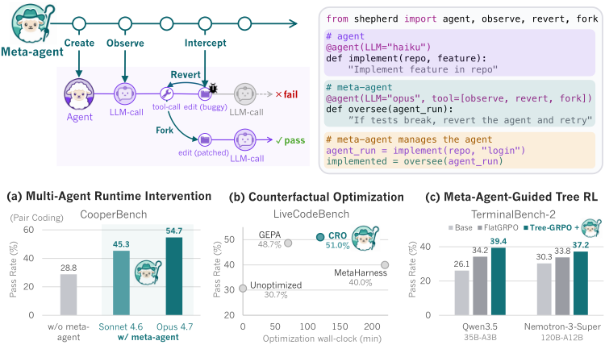
Abstract
随着大语言模型（LLM）智能体系统承担越来越复杂的任务，它们日益依赖元智能体（meta-agent）：即创建、操作并管理其他智能体的高阶智能体。诸如协调各智能体、在执行前阻止有风险的动作、或修复失败的运行等元智能体操作，都需要在运行时对智能体执行进行操控。然而，现有的智能体底层平台使这一点变得困难：它们只暴露对话记录和环境快照，迫使元智能体构建临时工具来重建完整的执行状态并对其进行操作。因此，我们提出了 SHEPHERD，一个以函数式编程原则为基础的 Python 底层平台，其中智能体的执行本身就是一等对象（first-class object），元智能体可以轻松地对其进行检查和变换。每一次模型动作、工具调用和环境变化都成为可逆的、类 Git 的执行轨迹中的一个结构化事件，任何历史状态都能以比 docker commit 和 fork 快 5 倍的速度被回退。三个示例用例展示了 SHEPHERD 的通用性：(1) 一个监督者元智能体防止并行编码智能体之间的冲突，将结对编程通过率从 28.8%
Weiyan Shi
预印本。
提升至 CooperBench 上的 54.7%；(2) 一个反事实优化元智能体通过提出编辑建议并从行为发生变化的点重放运行来修复智能体工作流，在 Terminal-Bench 2.0 上比 MetaHarness 高出 12.8%，且墙钟时间（wall-clock）降低 58%；(3) 一个训练元智能体在 rollout 过程中挑选分叉点，以改进长时程智能体强化学习（RL）中的信用分配，使 GRPO 在 Terminal-Bench 2.0 上的提升幅度翻倍。我们开源了 SHEPHERD，使用户和元智能体都能够对智能体执行进行有原则且高效的操作。
1 Introduction
随着基于大语言模型（LLM）的智能体系统日趋成熟，我们越来越多地看到在运行时作用于其他智能体的智能体的使用。Asawa 等人 [3] 与 Lin 等人 [24] 开发了顾问智能体（advisor agents），它们从执行轨迹（execution trace）中学习干预策略，引导智能体避开死胡同；GEPA 和 MetaHarness 等元优化器（meta-optimizer）对智能体工作流进行优化，以提升在给定下游任务上的性能 [2, 20]；Hou 等人 [11] 与 Ji 等人 [13] 则构建了树搜索强化学习（RL），通过对 rollout 进行分叉来比较不同备选延续所产生的奖励，从而改进每一步的信用分配。我们将这些系统称为元智能体（meta-agents）：即在执行期间或执行之后、作用于其他智能体及其执行轨迹的高阶智能体。在从智能体系统中提取能力方面，元智能体正变得日益核心 [50]。
然而，现有的智能体底层平台（substrate）并非为元智能体而设计。设想一个监督型元智能体（supervisor meta-agent）：它在一个编码智能体执行有风险的写入之前将其分叉，观察该分支的执行，并在发生失败时回滚更改。要做到这一点，元智能体必须观察正在运行的智能体，在写入之前拦截并分叉它，在失败时将其回滚，修改它以修复失败，然后恢复执行。近期的工作暴露了这些操作的若干片段：OpenHands 将会话的事件
| Method | Intercept execution | Fork agent + env. | Revert to past state | Modify agent behavior |
|---|---|---|---|---|
| BranchFS | ||||
| Docker | ||||
| OpenHands | ||||
| AgentGit | ||||
| SHEPHERD |
| Method | Intercept execution | Fork agent + env. | Revert to past state | Modify agent behavior |
流 [41] 呈现出来，AgentGit 为工作智能体提供了类 Git 的提交工具 [23]，BranchFS 对文件系统进行了隔离 [38]（表 1）。然而，这些底层平台的设计目的是为正在运行的智能体维护运行时状态，而不是为元智能体提供其作用于该智能体所需的操作。因此，元智能体的实现不得不在实践中重新发明定制工具来支持这些操作。
我们主张一种不同的方法：让智能体及其执行获得函数在函数式编程中所享有的那种一等公民待遇——即成为元智能体可以持有、执行、复制和重写的结构化数据。这一方法进而使代数效应处理器（algebraic effect handlers）[30] 成为可能，它们可以在不修改执行的情况下拦截并观察执行，从而实现对执行的回滚；同时也使延续（continuations）[7] 成为可能，它们为元智能体支持“暂停-检查-决策-恢复”（pause-inspect-decide-resume）模式。因此，我们提出 SHEPHERD——一个面向高阶智能体的、有原则的函数式编程模型，并将其实例化为一个直观的 Python 底层平台（图 1，第 3 节）。
SHEPHERD 将智能体定义为具有类型化输入与输出的任务，并将这些任务的执行记录在一条可逆的、类 Git 的执行轨迹中：智能体的每一个动作（工具调用、文件系统修改、数据库操作）都成为该轨迹中的一次提交（commit），每一次分叉都是一个分支（branch），而任何一个过去的智能体-环境状态都可以通过检出（checkout）来回滚。元智能体随后可以通过订阅任务的提交来观察任务的执行，通过向其轨迹中推送事件来进行拦截，通过检出相应的提交来回滚到任意先前的智能体-环境状态，分叉出该状态的一个新副本，并通过重写任务的定义来修改任务本身。
我们基于函数式编程的原理性根基为 SHEPHERD 元智能体（meta-agent）带来了若干强大能力：观察型元智能体不会扰动被观察智能体的执行；并行智能体可以在共享沙箱内、基于分叉出的环境以相互隔离的进程运行；回退到任意提交（commit）即可恢复与对应智能体-环境状态逐字节一致的副本。我们通过一个在 Lean 中机械化的小型代数效应演算（algebraic-effects calculus）对这些性质进行形式化，该演算同时为执行轨迹提供了精确的语义契约。该实现与模型无关且轻量：对于一个 5.8 GB 的 docker 镜像，SHEPHERD 分叉智能体-环境状态的速度达到 docker commit 的 5 倍，并复用 LLM 提供方 95% 以上的 KV cache。
SHEPHERD 使得以往需要大量定制化工程的元智能体应用得以轻松实现。我们展示了三个覆盖典型智能体生命周期的示例元智能体。在执行期间，一个运行时监督元智能体（§5.1）监视并行编码工作智能体（coding workers）的执行轨迹，并在它们发生冲突之前予以拦截，将 CooperBench [17] 的联合通过率从 28.8% 提升至 54.7%。在执行之后，一个反事实元优化器（§5.2）诊断先前智能体运行中的失败，并通过在修复方案将首次改变行为之处对运行进行分叉来验证所提出的修复，在 LiveCodeBench [12] 和 Terminal-Bench 2.0 [25] 等基准测试（benchmark）上比 MetaHarness [20] 等最先进的元优化器最多高出 27.5%，同时最多将墙钟时间（wall-clock time）缩短 58%。在训练期间，一个树搜索强化学习（RL）训练器（§5.3）在元智能体选定的轮次对 rollout 进行分叉，并采样兄弟延续（sibling continuations），通过从结果奖励（outcome rewards）计算优势（advantage）来改进信用分配，在 Terminal-Bench 2.0 上训练 Qwen3.5-35B-A3B [32] 时，其性能比 GRPO [33] 高出 5.2 分。
总而言之，我们的贡献包括：(i) SHEPHERD，一个面向高阶智能体（higher-order agents）的编程模型，其核心操作以函数式编程为基础并在 Lean 中机械化；(ii) 一个将该模型实例化于高性能且高效基座（substrate）之上的 Python 框架；以及 (iii) 三个使用 SHEPHERD 基座构建、覆盖智能体生命周期的元智能体。
2 Related Work
元智能体（Meta-Agents）。元智能体应用正在近期工作中不断涌现 [50, 49]。Darwin-Gödel Machines [52] 与 Group-Evolving Agents [44] 维护自修改代码的动态档案库。Hyperagents [53] 与 Meta-Harness [20] 在元层面优化任务智能体的问题求解策略。另一些研究路线则通过进化搜索 [26, 42] 或记忆增强架构 [55, 22, 56, 47, 43, 34] 来改进智能体的上下文与长期检索。上述每种方法都重新发明了对智能体实施操作所需的运行时机制——解析交互记录、构建定制的环境快照、以修改后的源代码重新执行。SHEPHERD 为这些操作提供了统一的基座，使元智能体能够在不扰动智能体的情况下对其进行观察、分叉其相互耦合的智能体-环境状态，并以字节级完全一致的方式重放先前的执行。
智能体元优化（Agentic Meta-Optimization）。编排多个大语言模型（LLM）智能体是执行复杂任务和实现推理时扩展（inference-time scaling）的常用策略。标准的多智能体（multi-agent）框架 [45, 10, 1] 在各工作智能体（worker）之间传递自然语言消息；CooperBench [17] 展示了由此可能导致的协调失败。流水线优化器 [16, 6, 57] 与测试时扩展（test-time scaling）方法 [18, 21] 使用并行 rollout 和多数投票，并通过完整的端到端重新执行来评估每个候选方案。GEPA [2] 引入了一种反思式元智能体来提出工作流修改建议。这些方法将底层执行视为黑盒，并从头重新运行候选方案。SHEPHERD 则增加了一种不同的评估原语：元智能体可以在某次修改首次改变行为的确切提交（commit）处对工作智能体的上下文进行分支，并仅重放受影响的后缀（第 4 节），从而使各候选方案能够有效地复用计算。
智能体运行时与基础设施（Agentic Runtime and Infrastructure）。一条并行的研究路线为智能体状态管理添加基础设施支持，将检查点（checkpoint）原语置于软件栈的不同层级。AgentGit [23] 将版本控制操作暴露为智能体可在 LangGraph 工作流内部调用的协作式工具。BranchFS [38] 添加了内核级的 branch() 系统调用来隔离文件系统状态，且独立于工作智能体的工具调用结构。AgentSPEX [39] 将检查点机制嵌入到面向智能体工作流的领域特定语言（DSL）中。上述每种方法都将检查点原语置于软件栈中的不同位置，并在智能体自主性、透明性与语言级集成之间做出不同的权衡。SHEPHERD 则位于这一设计空间中的另一个位置：它将环境状态与智能体执行状态相耦合，因此基座能够观察到工作智能体所发出的相同事件，而无需重写工作智能体或从头重放。这使得同一基座能够在统一接口下支持运行时监督、事后轨迹优化、元优化以及有状态强化学习（RL）。
SHEPHERD Programming Model
图 1 中的监督元智能体（supervisor meta-agent）需要对工作智能体执行以下操作：在运行时观察它正在做什么，在一次有风险的写入之前拦截并分叉执行，以尝试另一种续延（continuation），在失败时回滚更改，然后修改智能体以修复问题并恢复执行。这些操作很难在现有基座中获得支持，因为智能体执行充满了诸如模型调用、文件系统写入和工具调用等副作用，而这些副作用难以被当作可检查、可操作的值来对待。
函数式编程在组织带效应的计算方面有着悠久的传统：通过划定一条边界，将计算所描述的内容与其效应抵达外部世界的方式分离开来。边界之内的计算由此变得可观察、可替换、可分支且可重放。SHEPHERD 将这一准则扩展到智能体执行，将其视为一等对象（first-class object）[46]。这就需要将四个
| Primitive | Runtime Operation Enabled | FP construct |
|---|---|---|
| Task Effect Scope Trace | Modify agent behavior Observe and intercept execution Fork execution state Revert and replay from past state | typed function algebraic effect scoped effect handler persistent data structure |
| Primitive | Runtime Operation Enabled | FP construct |
概念提升为一等地位：智能体是什么（tasks，§ 3.1）、它做什么（effects，§ 3.2）、它在哪里运行（scopes，§ 3.3），以及已经做了什么（execution trace，§ 3.4）。每个原语都建立在某个函数式编程构造之上（表 2），而 SHEPHERD 的关键性质则依赖于一个针对类型化效应轨迹的小型 Lean 机械化语义（附录 B）。
3.1 Task: Agent Definition
3.2 Effects: Agent Actions
监督型 meta-agent 需要在 worker agent 执行的同时看到它正在做什么，且不对其造成干扰。函数式编程通过代数效应（algebraic effects）[29, 30] 解决了带效应的程序所面临的类似问题：任何触及外部世界的操作（读取文件、发送消息）都被具体化为一个带类型的事件，由处理器（handler）决定该事件的含义。同一个程序无需修改源代码即可在不同的处理器下运行：一个处理器可以执行它，而另一个处理器则记录它。
SHEPHERD 将这一准则应用于 agent 动作。效应（effect）是对 worker 所尝试的单个动作的带类型记录。它们可以记录大语言模型（LLM）调用、工具调用、环境变更，甚至是用户自定义的动作。worker 发出的每一个效应都会被追加到其运行所在作用域（scope）的不可变效应流（effect stream）中（§3.3），而 meta-agent 可以通过订阅该流来观察它，也可以通过向流中推入效应来拦截一次正在进行的执行。
一个动作的意图（intent）与结果（outcome）是相互独立的事件。每个动作会发出两个效应：worker 发起该动作时发出一个意图，外部世界作出响应时发出一个结果。因此，meta-agent 可以读取一个意图，判定它不应被实体化（materialize），并在结果到来之前采取行动，如下所示：
1 async for effect in work.trace.live():
2 if isinstance(effect , ToolCallIntent) and is_destructive(effect):
3 if check(effect) == "deny":
4 work.discard() # outcome never materializes
观察是非干扰性的。由于 worker 的效应流是不可变的，无论是否有 meta-agent 在观察，该流都逐字节完全相同。由于意图与执行相互解耦，meta-agent 还可以在另一个处理器下重放效应流的一个片段。例如，meta-agent 可以在修改后的任务体（task body）下重放一次工具调用，以观察底层 agent 的行为会如何变化。
大多数效应是可逆的。每个效应都带有一个可逆性层级（reversibility tier），用于决定该效应在被实体化（即对真实世界执行）时的行为。可逆效应（如文件系统写入、沙箱状态）和可补偿效应（如数据库写入）会在发出时被基座（substrate）捕获，并可由用户或 meta-agent 随意回滚。可逆效应通过其所在作用域（§ 3.3）原生地回滚，而可补偿效应则通过由基座调用的、用户提供的补偿处理器（compensation handler）来回滚。然而，不可逆效应（如模型调用、电子邮件）在发出时即被实体化，效应流只能将其记录下来以供审计。
对于观察者而言，读取、回滚和重新解释动作已经足够。然而，想要尝试替代执行路径的 meta-agent 还需要能够以原子方式分叉（fork）worker 及其环境。
3.3 Scopes: Agent Environments
当监督者 meta-agent 分叉（fork）一个 agent 时，该 agent 必须运行在属于自己的隔离世界中。分支中发出的任何效应都不得泄漏到父级的效应流中。实现这一点的函数式编程构造是区域作用域效应处理器（region-scoped effect handler）。函数可以为其执行的某个子区域打开一个全新的处理器，在其中运行，然后要么将该区域的效应向外传播（提交，commit），要么将其放弃（回滚，revert）。区域可以干净地嵌套：每一层拥有自己的效应解释，且不会污染其他层。SHEPHERD 中的作用域（scope）为 agentic 执行实现了这一构造。它绑定 worker 的沙箱句柄、模型提供者、工具接口和效应流游标，并拥有在其中运行的任务所发出的效应。
作用域支持四个原语。emit 将一条效应写入作用域的流。fork 打开一个写时复制（copy-on-write）的子作用域。merge 将子作用域的效应传播到其父作用域。discard 放弃一个子作用域，父作用域则完全不受影响。将 §3.1 中 supervise 的函数体填充如下：
1 @agent 2 def oversee(work: Task[Patch]) -> Patch: 3 child = scope.fork() 4 result = await work(child) 5 if result.failed: child.discard() 6 else: scope.merge(child) 7 return result
agent 及其环境被原子地分叉。scope.fork() 在单个原子的写时复制步骤中捕获 worker 的文件系统、进程和绑定。因此，随后的 discard 会回滚 worker agent 触碰过的一切痕迹。基座通过覆盖文件系统（overlay filesystem）虚拟化以及容器化沙箱的原生检查点设施来实现这一点，并将其隐藏在统一的设备层接口之后（附录 C.7）。
作用域可以被并行化、嵌套、回滚和恢复。meta-agent 可以从父作用域创建并发分叉，并独立地对每个分叉执行 merge 或 discard。作用域还可以嵌套：meta-meta-agent 可以分叉、观察并恢复一个 meta-agent，而不会污染其下层的 worker。丢弃子作用域会使父作用域与分叉时刻保持字节级完全一致。恢复作用域同样会保留 worker agent 的世界：由 meta-agent 恢复运行的暂停 worker 看到的是其原始作用域中记录的绑定，而不是 meta-agent 当前持有的任何内容。
作用域拥有当前的执行区域。然而，要回滚到任意的过去状态，执行历史本身必须是一个可导航的值。我们将在下文解决这一问题。
3.4 Execution Trace: Agent Execution History
希望回滚某个 worker agent 的监督型 meta-agent——即返回到该 worker 执行中更早的某个时刻，然后要么对其加以检查，要么在不同条件下从那里继续向前运行——需要 worker 执行的每一个过去状态都按需可达。在函数式编程中，持久化数据结构（persistent data structures）[28] 提供了这一性质：结构在修改之后，其每一个版本仍然保持可访问，并且新版本与旧版本共享结构以提高效率。在 SHEPHERD 中，与之对应的是执行轨迹（execution trace）。它是一个持久化的、类 Git 的提交图：每个作用域的效应流（effect stream）都会物化为该图某个分支上的一个带类型的提交序列。§ 3.3 中的四种作用域操作也随之编译为类 Git 的操作：
1 scope.emit(effect) <=> shepherd commit -m "<effect >"
2 scope.fork() <=> shepherd checkout -b <child -branch >
3 scope.merge(child) <=> shepherd merge <child -branch >
4 scope.discard(child) <=> shepherd branch -D <child -branch >
每一个过去状态都是可达且可重放的。meta-agent 可以通过哈希值导航到任意提交，读取那一刻 agent 与环境的确切状态，且其完整作用域完好无损。定位回归首次出现的那个特定提交，或两个兄弟分支开始产生分歧的那个提交，可归结为在该轨迹上进行图遍历。从过去的某个提交进行重放，也会得到与分歧之前作用域字节级完全一致的重建，因此 meta-agent 所付出的唯一代价就是已执行的后缀。
产生分歧的分支共享存储。正如持久化数据结构在各版本之间共享子结构一样，执行轨迹在各分支之间共享存储：从同一提交分叉出来的两个兄弟分支通过内容哈希共享其整个前缀。跨众多分叉扇出的 meta-agent 只需为分歧的后缀付出代价，而任意一组分支都可以基于其捕获的效应进行 diff，从而让 meta-agent 能够依据各分支的行为来决定合并哪一个。
4 Framework Performance
要让 SHEPHERD 中的 meta-agent 具备高性能，三项开销特性至关重要：scope.fork() 必须与镜像大小无关，从而使分支操作足够廉价；轨迹必须随 agent 写入的内容而非镜像伸缩，以便能在长时间执行中持续存在；并且逐字节一致的重放保证必须延伸到 LLM 提供商的提示缓存（prompt cache），使重新执行能够高效复用 KV cache。我们在真实的 Terminal-Bench 2.0 镜像上对这三项逐一进行测量。完整结果见附录 C。
Fork 与 revert 速度快，且与镜像大小无关。SHEPHERD fork 是在现有文件系统之上创建一个新的写时复制（copy-on-write）层，而不是复制整个文件系统，因此无论镜像大小如何，其开销都是常数。因此，无论镜像大小如何（42 MB 到 5.8 GB），每次 fork 只需 134-143 ms；在 5.8 GB 镜像上，K 次 fork 的开销为 K × 143 ms，而完整 rootfs 复制则需 K × 53.5 s，每分支减速达 192 倍（表 3）。速度次快的替代方案 BranchFS [38] 仅通过 FUSE 对文件系统本身进行分支；与其他方法一样，它并不支持 agent 本身这一概念（表 1）。
| Image. | Method. | Fork ↓. | Revert ↓. | Storage ↓. | Branching (K=4).Disk ↓ | Branching (K=4).RAM ↓ |
|---|---|---|---|---|---|---|
| openssl-selfsigned-cert (42MBimage) | Full copy | 5,154 ms 658 ms 3,764 ms | 2,067 ms | 268MB | 804MB | 112MB |
| Docker commit | 749 ms | 30KB | 90KB | 29.8MB | ||
| Modal snapshot | 2,260 ms | - | - | - | ||
| BranchFS [38] | 266 ms | 360 ms | 12KB | 48KB | 22.7MB | |
| SHEPHERD | 134 ms | 142 ms | 10KB | 30KB | 20.5MB | |
| caffe-cifar-10 (200MBimage) | Full copy | 5,971 ms | 3,446 ms | 645MB | 1.9GB | 230MB |
| caffe-cifar-10 (200MBimage) | Docker commit | 692 ms | 761 ms | 30KB | 90KB | 38.3MB |
| caffe-cifar-10 (200MBimage) | Modal snapshot | 3,291 ms | 2,463 ms | - | - | - |
| caffe-cifar-10 (200MBimage) | BranchFS [38] | 272 ms | 357 ms | 12KB | 48KB | 29.4MB |
| caffe-cifar-10 (200MBimage) | SHEPHERD | 135 ms | 140 ms | 10KB | 30KB | 27.1MB |
| pytorch-model-recovery (5.8GB image) | Full copy | 53,462 ms | 25,943 ms | 8.3GB | 24.9GB | 910MB |
| pytorch-model-recovery (5.8GB image) | Docker commit | 725 ms | 828 ms | 30KB | 90KB | 30.2MB |
| pytorch-model-recovery (5.8GB image) | Modal snapshot | 3,160 ms | 2,328 ms | - | - | - |
| pytorch-model-recovery (5.8GB image) | BranchFS [38] | 280 ms | 358 ms | 12KB | 48KB | 22.7MB |
| pytorch-model-recovery (5.8GB image) | SHEPHERD | 143 ms | 147 ms | 10KB | 30KB | 25.7MB |
| Image. | Method. | Fork ↓. | Revert ↓. | Storage ↓. | Branching (K=4).Disk ↓ | Branching (K=4).RAM ↓ |
重放可复用 LLM 提供商的提示缓存。由于 SHEPHERD fork 保留了与父分支逐字节一致的 LLM 消息前缀，提供商的提示缓存能够在不失效的情况下解析该前缀。
在 Anthropic Claude Haiku 4.5 上针对 8 个 Terminal-Bench 2.0 任务的测量中，从 K=2 开始，缓存命中率便趋于平稳，维持在约 95%，与逐字节一致的上限相差在 5% 以内。每当 meta-agent 扇出（Tree-GRPO 的兄弟分支，见 5.3 节）或重放已完成的轨迹（轨迹压缩，见 D 节）时，缓存复用都会不断叠加。我们在附录 C.6 中提供了更多细节。
实验
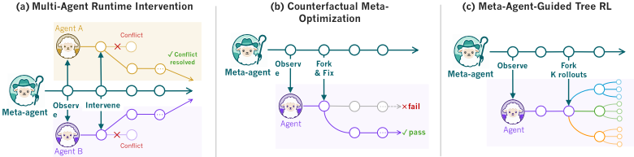
R=1 R=0.5 R=0 K 个 rollout 共享前缀 Agent B Meta-agent ╳ ╳ Agent A ✓ 冲突 观察 干预 … ╳ 丢弃
SHEPHERD 底层基座使广泛的 meta-agent 应用成为可能。在本节中，我们展示其中三类应用，覆盖 agent 开发栈的各个层面。（1）在执行期间，一个运行时监督 agent 观察两个并行的编码 worker，并在轨迹中途对二者进行拦截，将 CooperBench 上的成对通过率从 28.8% 提升至 54.7%（§5.1）。（2）对于事后工作流优化，一个 meta-optimizer 对执行轨迹进行分支以测试反事实的工作流修改，在五个数据集中的四个上优于 MetaHarness，且墙钟时间最多降低 58%（§5.2）。（3）对于智能体强化学习（RL）训练，一个 meta-agent 在 RL rollout 期间选择 fork 点以提取每步信用（per-step credit），在 Qwen3.5-35B-A3B 上使 Terminal-Bench 2.0 相比 Flat GRPO 提升 5.2 分（§5.3）。
每个应用都运用了 SHEPHERD 的不同特性。§ 5.1 需要无扰动观测（non-perturbing observation）：一个订阅了两个 worker 效应流的监督者，能够在不扰动它们的情况下访问其轨迹。§ 5.2 依赖于字节级完全一致的重放（byte-identical replay）：候选编辑通过仅重新执行受影响的后缀来对照固定基线进行验证。§ 5.3 运用了低成本分支（cheap branching）：SHEPHERD 低成本的智能体-环境状态分叉使得通过兄弟推演（sibling rollouts）进行逐步信用分配变得经济可行。我们在附录 D 中报告了第四个用例，该用例在 meta-agent 的事后洞见（hindsight）下将已完成的轨迹压缩为更短的重跑。我们指出，这些应用并未穷尽所有可能，并在附录 A.2 中讨论了 SHEPHERD 所能支持的更多潜在应用。
5.1 Meta-Agent for Multi-Agent Coordination: Runtime Supervisor
动机。CooperBench [17] 记录了一种“协调诅咒”（curse of coordination）：即使允许相互通信，并行的编码智能体协调得也足够差，以至于其成功率低于单个智能体独立工作的情况。SHEPHERD 的效果流（effect stream）与 scope 原语使元智能体（meta-agent）能够通过实时检查两个 worker 的执行情况并在损害累积之前进行拦截来弥合这一差距。
方法。两个 Claude Haiku 4.5 worker 智能体在并行分叉的 scope 中运行，各自被分配实现一个互补的功能特性。一个 Claude Sonnet 4.6 或 Opus 4.7 meta-agent 通过 SHEPHERD 订阅两个效果流，并被提供三个协调工具：inject（向 worker 的会话推送指导）、handoff（将领先 worker 的 scope 分叉为跟随者的新根并重启）以及 discard（通过 scope.discard() 中止卡住的 worker）。
实验设置。我们在 CooperBench [17] 上进行评估。基线为 solo（由单个 Haiku 4.5 智能体顺序处理两个功能特性）和 coop（两个并行的 Haiku 4.5 智能体运行在分叉的 scope 中，通过 relay 沙箱进行点对点消息传递，无监督者）。完整协议、数据集构建以及各条件下的操作说明见附录 E。
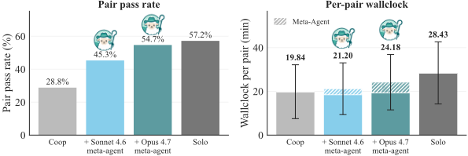
结果。在全部 479 对样本上，coop 基线的成对通过率（pair pass rate）为 28.8%，复现了 CooperBench 所记录的相对于 57.2% solo 上限的协调惩罚，差距达 28.4 个百分点。Sonnet meta-agent 恢复至 45.3%，Opus meta-agent 达到 54.7%，弥合了 91% 的协调诅咒差距（图 3 左）。在朴素的 coop 基线中，每个 worker 只能看到对方选择发送的内容，而这些内容经过了发送方对共享状态不完美认知的过滤。相比之下，监督者直接订阅两个 worker 的效果流，在不干扰它们的前提下完整观察其动作，并据此加以引导。附录 E 表明，监督者偏好轻量级的 inject 动作，同时在必要时仍会采取 handoff 和 discard 动作。
墙钟时间（wall-clock）开销适中：solo 平均每对耗时 28.4 分钟，而受监督的条件则接近并行的 coop 基线（19.8 分钟）。Sonnet 以 21.2 分钟完成（1.4 分钟的 meta 开销），Opus 以 24.2 分钟完成（4.3 分钟的 meta 开销），分别约为 solo 时间的 75% 和 85%（图 3 右）。这是因为 meta-agent 每隔几秒才观察一次 worker 智能体，除非需要拦截，否则不会干预它们（附录 E）。我们将此视为 SHEPHERD 能够实现有效运行时监督的一个存在性证明；监督的 token 成本与任务执行成本之间的权衡在附录 A 中讨论。
5.2 Meta-Agent for Meta-Optimization: Counterfactual Replay Optimization (CRO)
Motivation. When an agentic workflow fails, the failure usually traces to a small set of faulty or missing agent calls [51, 4]. Counterfactual analysis [37] provides standard machinery for diagnosing such failures: would a localized change to a suspect set of calls have fixed the outcome? Answering this in a standard agentic runtime is difficult - workflow re-runs reintroduce stochastic and environmental variation unrelated to the edit, and flat transcripts give little structure to localize failures against. CRO sidesteps both problems by replaying counterfactuals through forks of SHEPHERD 's execution trace rather than re-executing changed workflows from scratch.
| Method | HoVer.Test | HoVer.Wall | MATH.Test | MATH.Wall | IFBench.Test | IFBench.Wall | LiveCodeBench.Test | LiveCodeBench.Wall | Terminal-Bench 2.0.Test | Terminal-Bench 2.0.Wall |
|---|---|---|---|---|---|---|---|---|---|---|
| Baseline | 43 . 7 ± 0 . 0 | - | 60 . 7 ± 1 . 2 | - | 42 . 4 ± 1 . 8 | - | 30 . 7 ± 2 . 1 | - | 31 . 2 | - |
| GEPA | 43 . 7 ± 0 . 0 | 67 | 74 . 0 ± 3 . 5 | 20 | 50 . 1 ± 1 . 2 | 50 | 48 . 7 ± 1 . 5 | 73 | 31 . 2 | 157 |
| MetaHarness | 77 . 8 ± 0 . 4 | 235 | 79 . 3 ± 1 . 2 | 101 | 52 . 3 ± 1 . 4 | 126 | 40 . 0 ± 3 . 6 | 217 | 31 . 2 | 173 |
| CRO | 79 . 4 ± 0 . 2 | 120 | 80 . 0 ± 2 . 0 | 42 | 51 . 3 ± 1 . 1 | 82 | 51 . 0 ± 1 . 7 | 117 | 35 . 2 | 73 |
| Method | HoVer.Test | HoVer.Wall | MATH.Test | MATH.Wall | IFBench.Test | IFBench.Wall | LiveCodeBench.Test | LiveCodeBench.Wall | Terminal-Bench 2.0.Test | Terminal-Bench 2.0.Wall |
Method. CRO maintains a pool of agentic workflow variants together with their SHEPHERD execution traces when run on the training set. At each step, the proposer analyzes these traces to identify failure modes, picks a parent candidate and emits a set of candidate edits as counterfactual experiments to patch these failure modes. Every edit is paired with a fi x set of training examples it should repair and a guard set whose performance must not regress. SHEPHERD validates these edits through counterfactual replay on the combined fix and guard set: for each edit, it forks the parent's execution trace at the first commit that would be affected by the edit and replays the suffix with the edited workflow. Candidates that outperform their parent on this combined set are evaluated on the dev set and added to the candidate pool; after a set number of iterations CRO returns the highest-scoring member on the dev set as the selected candidate (Algorithm 1, Appendix F).
Setup. We evaluate on subsets of HoVer [14], MATH [9], IFBench [31], LiveCodeBench [12], and Terminal-Bench 2.0 ( [25]), comparing CRO against the baseline workflow, GEPA (optimizing workflow code) [2], and MetaHarness [20]. The executor is GPT-5.4-mini and meta-optimizers use GPT-5.4 (in the Codex harness for MetaHarness and GEPA). We stop each algorithm after 20 candidates on HoVer, MATH, IFBench, and LiveCodeBench, and after 10 on Terminal-Bench 2.0. Per-dataset settings, baselines, and full results are in Appendix F.
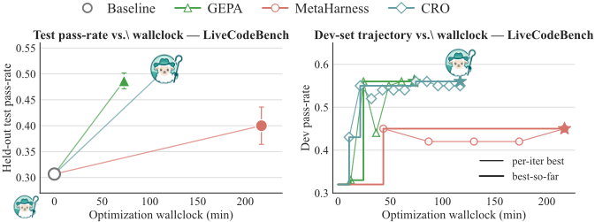
Results. CRO obtains the best performance on four of five datasets (Table 4). It has higher held-out test score and lower wall-clock simultaneously compared to MetaHarness across these datasets, with savings ranging 27-58%. Notably, on Terminal-Bench 2.0, the most execution-bound benchmark in the suite, GEPA and MetaHarness both fail to improve over the baseline on the subset under study, while CRO improves performance by 4 pts while also needing the least wall-clock. On IFBench, MetaHarness edges CRO by 1.0 pt on test (within a standard deviation) but still takes 37% longer.
我们将 CRO 在下游性能上的提升归因于两个来源。首先，与 MetaHarness 全流水线重跑所引入的噪声相比，CRO 的反事实实验将计算中未受影响的部分保持不变，使模型能够隔离并修复故障；我们定性地发现所生成的假设质量很高（附录 F）。其次，SHEPHERD 类 Git 式的执行轨迹使 LLM 能够比其他方法所使用的扁平日志更自然地浏览先前的执行。另一方面，CRO 在墙钟时间上的节省来自三个方面：反事实重放通过 SHEPHERD 只重新执行每次编辑首个作用点下游的后缀部分，而非完整流水线；字节级完全相同的前缀允许复用
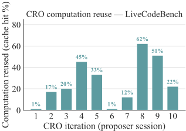
LLM 的 KV-cache；而目标集门控（target-set gating）则在提交完整的开发集评估之前，先针对训练集的一个小子集对每个候选进行评估。在 LiveCodeBench 上，计算复用率从首次冷启动 proposer 会话时的约 1% 上升到运行后期的 60% 以上（图 5）。
5.3 Meta-Agent for Training: Meta-Agent-Guided Tree-RL
动机。面向长程任务的 RLVR（可验证奖励强化学习）受困于稀疏的、回合级的奖励：一个执行数十步的 Agent 直到回合结束才收到单一的二元信号 [5, 40, 36]。为获得细粒度的奖励信号，一种方法是树搜索强化学习（Tree-search RL）[11, 13]，它仅凭结果奖励（outcome reward）通过兄弟 rollout 推导出步级优势（step-level advantage）。在无状态环境中，这轻而易举 [48]。然而，对于会修改真实文件系统与服务的 Agent 任务，要使该方法可行，需要精确且廉价的状态分叉（state-forking），而这正是 SHEPHERD 所提供的。
方法。面向长程 Agent 的 GRPO 风格训练为每个提示采样 G 条轨迹，并为每条轨迹分配一个单一的结果奖励，再将其均匀分摊到所有动作上 [33]。我们通过对中间状态进行树搜索来恢复更细粒度的信用 [35, 58]：在每条根 rollout 上，由 Meta-Agent 选定一个分叉回合 t，我们从该状态向前采样 K 条兄弟分支，从而以仅 K 次额外分支 rollout 的代价，为每个任务得到 G ( K +1) 条轨迹（分叉是精确且廉价的，见表 3）。信用分配在两个层级上进行：t 之前的前缀动作继承跨 G 条根的标准根间（inter-root）GRPO 优势，而后缀动作则采用在每个 ( K +1) 成员分叉组内计算的树内（intra-tree）优势，从而在无需学习到的价值函数或过程奖励模型（process reward model）的情况下显现出逐步的结果差异。完整流程在附录 F.6 中以算法 2 的形式给出，Meta-Agent 分叉决策的定性示例见第 F.7 节。
实验设置。我们同时采用 Qwen3.5-35B-A3B 与 Nemotron-3-Super-120B-A12B 作为基座模型 [32, 27]，并通过 tinker [19] 进行训练。我们在 Endless Terminals 语料库 [8] 的一个过滤子集上进行训练：从包含 2,492 个任务的任务池出发，我们剔除那些基座策略在全部 8 次采样 rollout 中均通过的任务（pass@8=1.0），为 Qwen3.5 留下 442 个任务，为 Nemotron-3 留下 530 个任务。我们将 TerminalBench 2.0 [25] 留作分布外（out-of-distribution）测试集，每 10 个训练步评估一次。我们在生成计算量匹配的条件下比较两种 RL 设置：Flat GRPO，仅使用独立的根 rollout，在 G =8 条根上采用一个组基线（group baseline）；以及 Meta-Agent Guided Tree-RL（Tree-GRPO），即根 rollout 加上在 Meta-Agent 所选回合处分叉出的 K =4 条兄弟分支，并采用来自算法 2 的两级基线。完整的训练配置留待第 F.6 节给出。
结果。结果如表 5 所示。MetaAgent Guided Tree-RL 在两个基座模型上都是最强的设置。首先，Tree-GRPO 相对于 Flat GRPO 的提升在不同模型规模上保持一致：约 3B 激活参数的模型与约 12B 激活参数的模型分别获得 5.2 分和 3.4 分的提升。
| Method | Qwen3.5-35B-A3B | Nemotron-3-Super-120B-A12B |
|---|---|---|
| Base | 26.1% ± 4 . 21 | 30.3% ± 3 . 62 |
| Flat GRPO | 34.2% ± 4 . 05 | 33.8% ± 3 . 41 |
| Tree-GRPO | 39.4% ± 3 . 87 | 37.2% ± 3 . 19 |
| Method | Qwen3.5-35B-A3B | Nemotron-3-Super-120B-A12B |
这一改进源于训练时的一个模式：Tree-GRPO 的方法在两个模型上都产生更高的奖励方差（图 19）。Flat GRPO 为轨迹中的每个动作分配相同的、由结果导出的优势。Tree-GRPO 的树内基线（intra-tree baseline）则将分叉点之后采取的后缀动作隔离开来：共享同一前缀的 K+1 个兄弟节点仅在分叉点之后发生的事情上有所不同，因此该处的每步优势反映的是局部选择的质量，而非全局轨迹的结果。
SHEPHERD 使这一做法变得可以负担，而且我们发现树内基线还能产生信息量更大的梯度步。这一行为同样延续到 Endless Terminals 的验证集划分上（图 18，延后至 F.6 节）。
6 Conclusion
我们提出了 SHEPHERD，一种基础层（substrate），它使元智能体（meta-agent）能够将另一个智能体的执行作为一等对象来持有、检查、分叉和修改，就像函数式编程中的函数一样。SHEPHERD 中的元智能体是作用于智能体执行之上的高阶智能体，我们通过三个应用展示了这一点：对并行编码智能体的运行时监督、用于工作流优化的反事实重放，以及在长程强化学习（RL）中实现更细粒度信用分配的 Tree-GRPO。更广泛地说，SHEPHERD 开辟了一条通往作为智能体执行的主动操作者的元智能体系统的道路。未来的智能体可以利用这一基础层将执行轨迹压缩为可复用的工作流、运行反事实的智能体可解释性探针、安全地门控不可逆动作，或学习用于管理智能体执行的策略。随着智能体系统的生命周期变得更长、状态更多、影响更大，我们相信这种执行层面的控制将成为有效元智能体的核心抽象。SHEPHERD 是让这一抽象变得随时可用且可编程的一步。
A.1 Limitations
存在性证明定位。我们的三个案例研究均以存在性证明的形式报告：在给定我们为该案例编写的元智能体的前提下，基底原语足以在代表性数据集上带来有意义的提升。我们不声称元智能体策略具有最优性，不声称具备跨模型家族和基准测试（benchmark）的大规模鲁棒性，也不声称在没有 SHEPHERD 的情况下无法匹配这些核心数字。建立完整的举证责任——即与每一种合理的替代基底和策略进行正面对比——超出了本工作的范围，本工作主要旨在将 SHEPHERD 作为一个框架加以介绍。
监督与提议者成本。实时监督与 CRO 的结果均假设能够使用一个足够强大、能有效行动的元智能体（§5.1 中为 Sonnet 4.6 / Opus 4.7；§5.2 中为 GPT-5.4）。对于短任务，元智能体的 token 成本可能超过工作智能体（worker）的成本，这与现有元优化器（meta-optimiser）的情况相同 [2, 20]。我们在附录 F.4 中报告了每个实验组以美元计的总成本；这种权衡有利的情形取决于任务长度以及工作智能体与元智能体之间的成本比率。
反事实重放假设编辑与副作用之间的耦合较弱。CRO 从第一个依赖关系受该编辑影响的事件开始，重放候选编辑的后缀。当编辑触及一个影响会广泛传播的组件时（例如在每一步都会使用的工具的系统提示），后缀就是整条轨迹，缓存便毫无收益。我们在每个数据集的首次冷启动提议者会话中观察到了这种情形（附录 F.4）；在我们所研究的基准测试上，这种情形会在两到三次会话内摊销殆尽。
A.2 Future Works
智能体可解释性。当今对智能体系统的机制可解释性（mechanistic interpretability）研究在很大程度上是观察性的：对一份会话记录进行标注、拟合一个探针、然后得出结论。SHEPHERD 的耦合分叉将这一切转变为可检验的反事实干预。编辑单个组件（一个工具、一段系统提示片段、一个子任务定义），并从其影响的第一个提交点开始重放后缀，便将所有其他方差来源固定不变，从而分离出该组件对最终结果的贡献。CRO 的提议-重放机制是这一循环在任务成功目标驱动下的一个实例；一个自然的下一步是在可解释性目标下运行同一循环，例如找出能翻转某个特定决策的最小编辑，或找出移除后仍能保持任务成功的最小提示片段，从而使 CRO 成为一种用于解释而非优化的工具。
面向持续学习的可逆环境。§5.3 中 Tree-GRPO 的结果之所以成立，是因为对智能体的文件系统和进程进行分叉基本上是零开销的。同一原语适用于任何状态驻留在磁盘上或沙箱化进程树中的领域：计算机使用、网页浏览以及大型代码库编辑任务均属此类。一旦分叉变得廉价，单个智能体就可以在长达数周的交互上进行训练，而不是局限于单个 rollout 回合，同时由执行轨迹为每一次重访、每一次回溯和每一次重试的工具调用维护一条连贯的历史。如此一来，持续学习就变成了如何针对这张图调度读取的问题，而无需重新设计基座。
对智能体进行后训练（post-training）以使用基座。§5 中的案例研究固定元智能体，并让它管理一个基础工作智能体。与之对偶的问题是：工作智能体本身能否经过后训练而原生地使用 SHEPHERD 的原语，即一个在其自身的类型化效应流上包含 fork、discard 和 replay 的动作空间，而不仅仅是向环境发起工具调用。这严格来说比工具调用后训练更难，因为模型必须学会何时回退、何时重试、何时派生一个兄弟分支，而不仅仅是调用哪个工具。基座恰好提供了定义这些动作并对其计算精确回报所需的类型化状态。
将可逆沙箱作为一种安全属性。基底上的每个效应都带有可逆性层级（§3.2）：可逆的文件系统变更、可补偿的副作用和不可逆的外部调用各自具有不同的回滚契约。这使得 SHEPHERD 成为安全关键智能体部署的候选基底：外部覆盖操作可以抢先阻止任何不可逆效应的实体化，下游检查可以触发回滚至最后一个实体化点，而执行轨迹为审计者提供了关于实际发生情况的内容寻址记录，而非智能体所报告的内容。该基底并不能解决对齐问题，但它使得部署系统能够基于稳定接口实现标准的停机检查（halt-and-inspect）循环，而不是采用为每个智能体专门定制的管线。
B Mechanized Core and Proof Envelopes
SHEPHERD 将生产运行时与在 Lean 中被机械化的语义对象分离开来。生产框架执行普通的 Python 任务、provider SDK 调用、shell 命令、沙箱操作、重试、调度以及载体存储。这些执行本身并未被验证。被验证的产物是一个小型代数效应轨迹机（algebraic-effects trace machine），以及针对降低（lowered）后轨迹落入其边界之内的静态片段的由证明支撑的 profile。
声明层级。每个可检查的运行都可以携带一个带有 profile 和显式强度（strength）的证明信封（proof envelope）。profile 的取值为 runtime_only、reference_core_a、core0、core_a、core0h 或 extension 之一；strength 的取值为 runtime_only、reference_validated、forward_simulation 或 semantic_adequacy 之一。普通的 Python 运行默认为 runtime_only。当一条轨迹被可执行的 kernel-v3 参考验证器接受、但尚未声明 Lean 定理覆盖时，它成为 reference_core_a。只有当静态降低证据、生成轨迹验证以及 Lean 侧的片段假设全部与已完成的生成轨迹相匹配时，一条轨迹才会成为 core0 或 core_a。Core-0H 受 sidecar 门控：只有当附加了经过验证的内容寻址 Core-0H sidecar 清单（manifest）时，它才能接收 forward_simulation 信封，并且分类器不会从任意结构化处理程序中推断出它。Core-0/Core-A 信封声明 semantic_adequacy。Core-A 的由证明支撑的信封目前要求恰好存在一个被选中的直接中止（direct abort）捕获、不存在被选中的中止路径恢复/返回（resume/return），并且不存在选择闭包后缀（selection-closure suffix）；处理程序侧的效应、中止之前的排序、多个中止捕获，或未被使用的仅中止（abort-only）处理程序定义仍可通过参考验证。不完整或活跃（live）的前缀仍可通过参考验证，除非附加了未来的前缀证书。诸如转发（forwarding）、终结延迟/分叉（terminal delay/fork）和重放（replay）之类的发布控制仍保持为 extension，除非未来的证明信封指明了更强的定理。
Lean 定理面。该 Lean 开发可在 kernel-v3 证明工件（proof artifact）中通过 lake build 完成构建。证明信封当前使用的定理面如下：
可执行参考边界（executable reference boundary）。提交的代码包中的 Python agentic-kernel-v3-reference 包位于生产运行时与 Lean 开发之间。它验证 Core-0/Core-A 轨迹生命周期，重新运行静态 KernelProgram 以检查所生成轨迹是否完全一致，并发出显式的 ProofEnvelope。公开的 Run[T] 值携带一个 proof 字段；当前生产环境中的 Python 执行默认为 runtime_only。该信封记录一个内容寻址的证据标识符，其覆盖证明权威（proof authority）、验证器、程序摘要与轨迹摘要。内核信封从 proof_strength 推导出 proof_backed，因此仅凭 profile 名称并不能升级轨迹。运行时元数据即载体元数据（carrier metadata）：非运行时强度必须引用 kernel-v3 参考来源（provenance）和一个 proof-evidence:sha256 标识符，但公开的 Run[T] 元数据将此类导入暴露为 claimed_proof_backed，而非经运行时验证的证明权威。Lean 定理 id 集中于一个 proof-surface ABI 表中，该表由一个带有 #check 命令与类型化签名包装器的 Lean 模块进行检查，因此过时的定理名称或发生实质性变更的定理陈述会导致工件构建失败。缺少验证器所签发 Core-0H 两阶段 sidecar 清单的活跃前缀与结构化处理程序体，会被归类为可由参考验证（reference-validatable）而非有证明支撑（proof-backed）。工件门禁为 make verify-proof-envelope-claim。这使得该形式化声明可被检查，同时并不暗示所有可执行的 Agentic 程序都是有证明支撑的。
16
| Profile | Representative Lean theorem | Meaning |
|---|---|---|
| Core-0 | source_eval_to_machine ; core0_machine_ eval_to_source | Forward source-to-machine simulation and re- stricted reverse simulation for the ordinary callable-resumption fragment. |
| Core-A | source_eval_to_machine ; coreA_machine_ eval_to_source | Core-0 plus the direct abort-without-resume handler boundary currently admitted by the en- velope. |
| Core-0H | core0h_source_ eval_to_machine | Forward simulation for deterministic two-phase handler bodies with matching evidence; this profile is currently forward-only. |
| Trace monotonicity | trace_monotonic ; core0h_trace_monotonic | Machine execution extends traces by appending records rather than rewriting prior trace prefixes. |
| Branch replay skeleton | single_child_branch_ replay_sound | One-child structural replay soundness for an ex- act suffix replay model; this is not a production replay refinement proof. |
| Profile | Representative Lean theorem | Meaning |
非声明事项（Non-claims）。证明信封并不验证任意 Python 控制流、提供商 SDK 行为、模型输出、提示缓存状态、shell 命令、文件系统变更正确性、Docker 或沙箱实现、meta-git 载体存储、调度、取消、重试、恢复或多分支重放。主论文中的元智能体（meta-agent）应用依赖于生产基底加上实证验证；Lean 工件为有证明支撑的片段提供语义核心与边界纪律。
C Framework Performance: Extended Results
本附录汇总了支持第 4 节的全部扩展结果：测量协议（附录 C.1）、化解大文件担忧的变异规模扫描（附录 C.2）、“占单轮 2-3%”这一论断背后的智能体单轮延迟参考（附录 C.3）、堆叠覆盖层下的深度扩展（附录 C.4）、效果流观测开销（附录 C.5）、KV 缓存复用分解（附录 C.6），以及跨后端可移植性检查（附录 C.7）。
C.1 Measurement Protocol
硬件。表 3 中针对 SHEPHERD、docker commit 和完整 rootfs 复制的测量均在同一个 Vultr 云实例上运行（2 vCPU、16 GB 内存、SSD、Ubuntu 22.04、Docker 29.3.1、extfs 上的 overlay2 存储驱动）。Modal 的数据来自 Modal 托管的 gVisor 运行时（独立硬件），并由一次全新的基准测试（benchmark）复现而来，因此其延迟还额外包含了来自宿主侧智能体的网络往返。表 8 的测量使用 E2B Firecracker microVM。跨后端数据（附录 C.7）使用 E2B（Firecracker）、Modal（gVisor）和 Daytona（托管式 Linux 容器）。
工作负载。表 3 使用三个真实的 Terminal-Bench 2.0 Docker 镜像，规模跨越两个数量级：openssl-selfsigned-cert（42 MB）、caffe-cifar-10（200 MB）和 pytorch-model-recovery（5.8 GB）。完整复制会将整个容器 rootfs 打包为 tar（排除 /proc、/sys、/dev 和 /tmp），其开销相对镜像大小为 O(n)。docker commit、Modal 的 snapshot_filesystem() 以及 SHEPHERD 的 overlay 增量在 overlay2 驱动上相对镜像大小均为 O(1)。表 8 额外使用三个合成的工作目录：small（10 个文件，30 KB）、medium（100 个文件，100 MB）、large（100 个文件，1 GB）。KV 缓存实验使用真实的 Terminal-Bench 2.0 任务，并配备 Haiku 4.5 智能体。
17
每步变异模式。智能体在工作目录（workdir）内的写入通过固定的 5+3 随机文件模式进行模拟：5 次基线写入在检查点之前建立父状态，随后 K - 1 = 3 个兄弟分支中的每一个在分叉之后再各增加 1 次随机写入，全部写入被测的 workdir 中。每次写入默认大小为 10 KB。表 3 中与存储相关的各列只统计分叉后的分支增量：Storage 列报告单个兄弟分支的 overlay 增量（1 次写入 = 10 KB）；Disk @ K=4 列报告三个兄弟分支的 overlay 增量之和（3 × 10 KB = 30 KB）。这 5 次基线写入（50 KB）位于父层的 overlay 中，不计入上述统计。C.2 节中的表 7 报告完整的 overlay 上层目录（基线 + 分支，在此默认大小下为 8 × 10 KB ≈ 80 KB），并将单次写入大小从 1 KB 扫描至 100 MB，以验证底层基座与智能体写入的内容按 1:1 扩展，且不会在其上叠加任何乘数。
模式 A：智能体在宿主机上、沙箱在容器内。表 3 中的分叉/回退延迟测量的是模式 A 下智能体感知的墙钟时间，这与当今生产级智能体（mini-swe-agent、SWE-Agent、smolagents）使用沙箱的方式一致。宿主机上的一个 Python 智能体进程导入 litellm + tenacity（与 Terminus-2 的启动方式一致），通过一次调用预热 OpenAI gpt-5.4-mini 客户端，然后通过 tmux 会话驱动沙箱容器。每个操作从“操作发出”起计时，直到新沙箱的 tmux 对一条探测 bash 命令返回响应为止（echo READY_<uuid> + capture-pane，直至标记出现）。各方法特定的操作：
K=4 时的磁盘与内存。Disk @ K=4 指主机磁盘相对于新增 K-1 个分支的增量：docker commit 为提交层增量，full copy 为完整 rootfs tar 包（按 (K-1) × 每分支 tar 大小计算），SHEPHERD 为 overlay 层文件，BranchFS 为横跨 K 个分支的存储树（/var/lib/branchfs）。RAM @ K=4 是通过 docker stats -no-stream 对存活容器的常驻内存集（RSS）求和得到的（docker commit / full copy 为 K 个，其中每个分支都需要一个单独重启的容器；SHEPHERD 为 1 个容器的读数，它为每个分支 fork 出工作进程，但复用同一个主机容器作为 overlay 层宿主（K 个 fork 出的工作进程都聚合在这一个 RSS 读数之下）；BranchFS 为 1 个容器加上 BranchFS 守护进程的 RSS）。Modal 每个沙箱的主机内存/磁盘用量被隐藏在 Modal 运行时之后，因此其 K=4 单元格标记为 -。
协议。每个基准测试（benchmark）先进行 2-3 次预热迭代（会被丢弃），以预热文件系统缓存和即时编译（JIT）路径。测量采用围绕被测操作的墙钟时间 time.monotonic()。对于表 3 的 fork/revert 延迟：SHEPHERD / docker commit / Modal 每个单元格重复 10 次，full-copy 存储测量重复 5 次；K=4 资源列重复 3 次。误差棒为 ±1σ。存储用量通过 du -sb 在 overlay 上层目录（针对 SHEPHERD）或检查点产物（针对各基线）上测量。基准测试代码共享在 exp/framework-perf 下，请参阅 readme。
18
C.2 Substrate scaling under varying mutation size
对于表 3 中 10 KB 的增量，审稿人自然会关心的一点是：当 Agent 写入大文件时，基底是否仍能保持很小。我们在 5.8 GB 的 pytorch-model-recovery 镜像上，将每步写入大小从 1 KB 扫描至 100 MB，保持相同的 5+3 变异模式，但改变每次写入放入工作目录（workdir）的字节数。表 7 报告了每种大小下三次重复实验所得到的 overlay 磁盘增量与 fork 延迟。
两点发现：(a) 磁盘增量与 Agent 写入的内容 1:1 对应（从 1 KB/步时的 8 KB 到 100 MB/步时的 800 MB），因此基底在 Agent 实际产出之外不增加任何开销；(b) fork 与 revert 延迟在所有大小下均稳定保持在约 340 ms，因为这两个操作只交换 overlay 元数据，而非文件内容。我们还在同一扫描中验证了 revert 的正确性：在覆盖全部四种大小的 12 次重复实验中，revert 之后的工作目录与 fork 前状态完全一致（5 个基线文件得以保留，3 个 fork 后分支文件被干净地丢弃；12/12 PASS）。此处的绝对延迟比表 3 高约 200 ms，原因是本次扫描运行在 Mac/Docker Desktop 的 Linux 虚拟机（VM）上，每次调用都会额外引入 docker exec 开销；而其扩展形态与表中所声称的一致。
| Per-step write | Total written | Disk delta ↓ | Fork (ms) ↓ | Revert (ms) ↓ |
|---|---|---|---|---|
| 1KB | 8KB | 8.4KB | 339 | 348 |
| 10KB | 80KB | 80.4KB | 386 | 346 |
| 1MB | 8MB | 8.0MB | 331 | 385 |
| 100MB | 800MB | 800MB | 343 | 366 |
| Per-step write | Total written | Disk delta ↓ | Fork (ms) ↓ | Revert (ms) ↓ |
C.3 Agent per-turn latency reference
为了佐证 SHEPHERD 的 fork 相对于一个典型 agent 回合而言很小这一论断，我们在基准测试 harness 中加入了逐回合的墙钟计时，并运行了两个 Terminal-Bench 2.0 任务，每个任务最多运行 20 个回合（Anthropic Claude Haiku 4.5，E2B sandbox）。在测得的 17 个回合中，我们观察到：
LLM 调用占主导地位（占每回合墙钟时间的 98%）；此处工具调用耗时很小，因为 TerminalBench 任务大多只涉及轻量的 bash 操作（文件读取、软件包安装）。更重的工具操作（编译、训练）会将每回合耗时推至远高于中位数的水平。因此，SHEPHERD 的 134-143 ms fork（表 3）约为一个典型 Haiku 4.5 回合的 2-3%，并且远低于单次 LLM 调用响应时间方差的噪声本底。
C.4 Scaling Behaviour
表 8 报告了检查点/回退延迟如何随堆叠 overlay 层数的增长（左）以及随 effect stream 累积事件（右）而变化。在堆叠多达 50 层的情况下，SHEPHERD 的 overlay 检查点始终保持在 157-252 ms 区间内（在 E2B 上）；docker commit 同样大致恒定，但基线高出 2.8 倍（451-558 ms）。OverlayFS 的下层目录链受内核页大小限制的约束，上限约为 60 层；超过此深度的轨迹需要对冻结层进行周期性压实。
在 E2B 上（网络主导），每事件的 effect stream 开销（记录与观测）在多达 200 步内保持恒定，约为 120 ms。流大小以 ∼ 130 B/事件的速率线性增长。
C.5 Observe Overhead Detail
表 9 比较了本地 Docker 主机（无网络往返）与 E2B Firecracker（远程 API）上的 effect stream 记录吞吐量。本地开销为每事件 3.1 ms（5%）；E2B 的数值
19
| Depth | Agentic.Ckpt | Agentic.Revert | Docker commit.Commit | Docker commit.Revert | Steps. | Record. | Observe. | Stream. |
|---|---|---|---|---|---|---|---|---|
| 1 | 173 | 255 | 451 | 300 | 1 | 106ms | 107ms | 134B |
| 5 | 157 | 170 | 524 | 255 | 10 | 127ms | 178ms | 1.3KB |
| 10 | 252 | 167 | 481 | 258 | 50 | 109ms | 177ms | 6.5KB |
| 25 | 179 | 100 | 197ms | 117ms | 13.1KB | |||
| 170 | 558 | 260 | 200 | 171ms | 115ms | 26.4KB | ||
| 50 | 237 | 167 | 503 | 297 |
| Depth | Agentic.Ckpt | Agentic.Revert | Docker commit.Commit | Docker commit.Revert | Steps. | Record. | Observe. | Stream. |
（113 ms，87%）主要由每次 exec 调用的网络往返所主导，并不反映框架的序列化开销。我们另行验证了，将 supervisor 订阅到 effect stream 会给 worker 的上下文恰好增加零个 token：通过比较 worker 在附加与未附加 supervisor 两种情况下的消息列表，两个列表在整条 10 步轨迹中逐字节完全相同。
| Metric | Local | E2B | Condition | Worker context |
|---|---|---|---|---|
| Raw throughput Logged throughput Overhead / event Observe latency | 17 evt/s 16 evt/s 3.1ms (5%) 64ms | 8 evt/s 4 evt/s 113ms (87%) 104ms | Without supervisor With supervisor Context inflation | 21 msgs, 1449 chars 21 msgs, 1449 chars 0 chars (0.0%) |
| Metric | Local | E2B | Condition | Worker context |
C.6 KV-Cache Reuse Detail
表 10 报告了 §3 汇总数据背后的按任务、按分叉深度的视图。每个任务在 Anthropic API 上使用 Claude Haiku 4.5 运行一次以生成初始轨迹，并在分叉深度第 10 步、第 25 步和第 50 步处保存检查点（第三个检查点仅在轨迹达到该深度时才会触发）。在每个已保存的分叉点上，我们随后运行 K 个分支：每个分支将沙箱回退到该检查点，在最后一条前缀消息上附带 cache_control: {"type": "ephemeral"} 以恢复 LLM 消息前缀，然后继续采样。提供商的提示缓存（5 分钟 TTL）对已解析前缀的 token 按 0.10 × 输入 token 费率计费，对第一个分支的缓存写入按 1.25 × 费率计费；分支 2 至 K 则将该写入成本摊销到后续额外的读取中，这正是节省在 K=1 → K=2 时急剧攀升、此后趋于平稳的原因。
所有 Anthropic 测量均在最后一条前缀消息上使用 cache_control: {"type": "ephemeral"}；提供商的提示缓存（5 分钟 TTL）以正常输入 token 价格的 10% 提供该前缀。初始提示前缀低于 Haiku 4.5 的 4,096 token 最小可缓存阈值的任务被排除在外；在我们的 Terminal-Bench 2.0 样本中，该过滤条件剔除了一个任务（fix-git，157 字符的指令）。
C.7 Realization across Sandbox Backends
第 3 节的原语实现于现代容器化沙箱所暴露的 overlay 文件系统与 checkpoint 设施之上。一个单一的设备层接口对后端差异进行了抽象；针对该抽象编写的应用代码可以在不同提供商之间不加修改地运行。表 11 总结了兼容性以及在有实测数据情况下的 fork 延迟。
Docker（本地 / Vultr）。在 tmpfs 上使用内核 OverlayFS 的特权容器。checkpoint 会卸载 overlay，将上层目录冻结为一个命名层，然后重新挂载并将该冻结层置于 lower 堆栈中。实测中位数为 72 ms（50 次重复，2 vCPU / 4 GB）。
E2B Firecracker。通过 sudo 使用 OverlayFS 的微虚拟机（micro-VM）沙箱。语义与本地 Docker 完全相同；由于远程 API 往返，实测延迟更高（159-169 ms）。metacopy=on 挂载选项可避免 chown 时的整文件 copy-up。
| Task | Fork | Branching factor K.K =1 | Branching factor K.K =2 | Branching factor K.K =4 | Branching factor K.K =8 | Branching factor K.K =16 |
|---|---|---|---|---|---|---|
| openssl-selfsigned-cert | step 10 step 25 | 61 / 83 60 / 79 | 72 / 96 79 / 98 | 70 / 95 79 / 97 | 72 / 96 79 / 98 | 71 / 95 80 / 98 |
| nginx-request-logging | step 10 step 25 | 59 / 87 66 / 88 | 61 / 93 - | 63 / 93 - | 62 / 93 - | 62 / 93 - |
| build-cython-ext | step 10 step 25 | 60 / 87 68 / 89 | 67 / 95 78 / 97 | 67 / 95 77 / 97 | 67 / 95 77 / 97 | 67 / 94 - |
| configure-git-webserver | step 10 step 25 | 62 / 88 62 / 82 | 68 / 94 76 / 97 | 67 / 94 79 / 97 | 68 / 95 77 / 97 | 68 / 95 - |
| feal-differential-cryptanalysis | step 10 | 57 / 86 | 63 / 93 | 63 / 93 | 63 / 93 | - |
| llm-inference-batching-scheduler | step 10 | 55 / 83 | 63 / 92 | 63 / 92 | 64 / 93 | 64 / 93 |
| make-doom-for-mips | step 10 | 56 / 84 | 68 / 93 | 64 / 93 | 59 / 91 | 62 / 92 |
| step 25 step 50 | 64 / 88 74 / 89 | 73 / 96 84 / 99 | 75 / 97 85 / 99 | 74 / 97 84 / 99 | 74 / 97 - | |
| pytorch-model-recovery | step 10 step 50 | 67 / 85 | 82 / 98 | 82 / 98 | - | - |
| 58 / 86 | 65 / 93 | 64 / 92 | 64 / 92 | 64 / 93 | ||
| Mean | 62 / 86 | 71 / 95 | 71 / 95 | 70 / 95 | 68 / 94 |
| Task | Fork | Branching factor K.K =1 | Branching factor K.K =2 | Branching factor K.K =4 | Branching factor K.K =8 | Branching factor K.K =16 |
Modal（gVisor）。gVisor 阻止 mount / umount 系统调用，因此 checkpoint 使用 Modal 的 snapshot_filesystem() API（935-1137 ms）。Revert 会终止沙箱，并从快照镜像启动一个新的沙箱（75-79 ms）。
Daytona。具有 root 权限的云开发环境。OverlayFS 无需 sudo 即可工作。初步验证确认所有 scope 操作均通过。由于底层原语与本地 Docker 的 OverlayFS 完全相同（72 ms，在我们的 local_overlay 基准测试中与大小无关），Daytona 的实测 fork 延迟主要由远程 API 往返所主导；我们通过与 E2B 实测的 +91 ms RTT 类比，估计为 ∼ 150 ms（表 11）。
Prime Intellect（gVisor）。尽管 mount 成功，umount 仍被阻止，因此该框架回退为 cp -a 复制。其开销相对于工作目录大小为 O ( n )：根据我们的 real_docker_images 基准测试，一个小型工作目录（≤ 5 MB）的克隆需要 ∼ 100 ms，而同一原语在 44 MB rootfs 上扩展至 2.3 s，在 6 GB rootfs 上扩展至 57 s（storage_fix 基准测试）。因此，该回退方案适用于小型仓库，但不适用于大型仓库。
| Backend | Mechanism | Fork | Revert | Notes |
|---|---|---|---|---|
| Docker (local) E2B Firecracker Modal Daytona Prime Intellect | OverlayFS on tmpfs OverlayFS + sudo snapshot_filesystem() OverlayFS (root) cp -a fallback | 72ms 163ms 935ms 150ms 100ms | 70ms 157ms 79ms 140ms 110ms | Primary benchmark platform +90ms network roundtrip gVisor; no OverlayFS Validation passed; remote managed container gVisor; O ( n ) in workdir size |
| Backend | Mechanism | Fork | Revert | Notes |
21
D Trajectory Compression: Extended Results
动机。许多真实世界中的智能体任务都是可重复的：某一类 bug 修复、某一类数据处理脚本、某一类构建环境错误。智能体找到的第一个解决方案通常充满了事后看来并不必要的探索：冗余的探测、走入死胡同的假设、收敛之前的反复试错。我们提出这样一个问题：通过效果流（effect stream）阅读已完成轨迹的元智能体（meta-agent），能否识别出一个分叉点（fork point）和一个提示（hint），使得工作智能体（worker）在被恢复到该点的 SHEPHERD 作用域、并将该 hint 作为系统提示附加内容提供给它的条件下，以严格更少的步数达到相同的任务结果；也就是说，压缩该轨迹。SHEPHERD 的每步快照使这一过程代价低廉：元智能体无需在轨迹收集时就预先确定分叉点，而重跑只需承担后缀部分的开销。被压缩的轨迹能否泛化为可复用的工作流、供未来对同一任务类别的调用使用，是我们留待后续解决的开放问题。
![Figure 6: Trajectory compression across two worker model families and two benchmarks. The same worker is rerun from a forked SHEPHERD scope with the meta-agent's hint prepended to its system prompt; the resulting trajectory is the compressed one. A baseline is compressed when its rerun also passes the verifier and uses strictly fewer model calls. Left: mean trajectory length on the compressed trajectories, baseline (solid) versus rerun (hatched). Right: the compression rate (the fraction of passing baselines that admit a compression).](assets/a278/figures/fig_8.png)
实验设置。我们在完整的 Terminal-Bench v2.0（88 个任务）[25] 和 SWE-Bench Verified（500 个实例）[15] 上进行评估。两个基础 worker 跨越两个模型家族：Claude Sonnet 4.6（非思考模式）和 GPT-5.4（reasoning_effort=high）；在两个实验单元中，元智能体均为 GPT-5.4（reasoning_effort=xhigh）。元智能体读取一条已完成的 worker 轨迹的完整效果流，并输出一个 JSON 对象，其中包含一个 fork_step、一个自由格式的自然语言 hint，以及一段简要的理由说明。重跑会将 SHEPHERD 作用域分叉到恰在 fork_step 之前创建的快照，恢复 worker 截至该步的消息列表，将 hint 添加到系统提示的开头，并恢复 worker 循环。当重跑同样通过验证器（verifier）且使用的模型调用次数严格少于基线时，该基线轨迹即被计为已压缩；否则该重跑将被丢弃。我们测量两个量，二者均以基线已通过为条件。压缩率（compression rate）是指通过验证的基线中可被压缩的比例。在被压缩的轨迹本身上，我们针对同一集合报告基线的平均长度与重跑的平均长度，因此平均步数缩减量即为两者之差。
大多数轨迹都存在更短的通过性重跑。图 6 报告了这两个量。在 SWEBench Verified 上，Sonnet 的通过性基线中有 68%、GPT-5.4 的通过性基线中有 82% 在元智能体后见之明的视角下存在严格更短的通过性重跑；在 Terminal-Bench v2.0 上，相应比例分别为 77% 和 68%。在 SWE-Bench Verified 上，被压缩轨迹的平均基线长度从 21.4 次模型调用降至 8.9 次（Sonnet），从 19.0 次降至 8.8 次（GPT-5.4 high）；在 Terminal-Bench v2.0 上则分别从 15.8 次降至 7.1 次、从 11.4 次降至 5.2 次；其中单条轨迹的最大压缩出现在 sphinx-doc/sphinx-8459 上，Sonnet 的 80 步通过性基线在该任务上被缩短至 7 步。一个不使用元智能体的对照实验——在 N = 5 个独立样本中选取最短的通过性基线——在同一批任务上仅能挽回该差距的一小部分（见下文），这排除了将任务内基线方差作为解释的可能。在 SWE-Bench Verified 上，更强的 Sonnet 4.6 worker 每条被压缩轨迹的绝对缩减量（平均节省 12.5 次模型调用）大于 GPT-5.4 high（10.2）：更强的 worker 所产生的更长基线中包含更多可剔除的探索过程，因此后见之明有更多可去除的内容。
22
本附录的其余部分报告：(i) 图 6 背后的四格汇总表，(ii) 各任务的最大压缩案例，(iii) 从元智能体输出中逐字摘录的提示（hint）示例，(iv) 无元智能体的 best-of-N 对照，(v) 元智能体所选分叉步骤（fork step）的分布，以及 (vi) 元智能体的 span 提议提示词与验证协议。
D.1 Aggregate results
表 12 针对每个（工作模型，substrate）单元格，报告了尝试的任务数、通过的基线数、被压缩轨迹数、挽救数（rescue，即基线失败但重跑通过；未用于正文图表）、压缩率，以及被压缩轨迹在压缩前后的平均轨迹长度。平均缩减量 ∆ 仅在被压缩集合上取值，因此该平均值不会因那些元智能体没有可缩短内容的任务而被稀释。
| Substrate | Worker | n | n bpass | n compress | n rescue | rate | B | R | ∆ |
|---|---|---|---|---|---|---|---|---|---|
| Terminal-Bench v2.0 | Sonnet 4.6 | 88 | 31 | 24 | 12 | 77% | 15.8 | 7.1 | 8.6 |
| Terminal-Bench v2.0 | GPT-5.4 high | 88 | 40 | 27 | 13 | 68% | 11.4 | 5.2 | 6.2 |
| SWE-Bench Verified | Sonnet 4.6 | 500 | 79 | 54 | 10 | 68% | 21.4 | 8.9 | 12.5 |
| SWE-Bench Verified | GPT-5.4 high | 500 | 110 | 90 | 13 | 82% | 19 | 8.8 | 10.2 |
| Substrate | Worker | n | n bpass | n compress | n rescue | rate | B | R | ∆ |
一小部分尝试的任务未能完成，原因是在最繁重的基线运行期间 E2B 沙箱资源耗尽（文件系统密集型任务，如 install-windows-3.11、pytorch-model-recovery、video-processing）；具体而言，在 TerminalBench v2.0 上每个单元格的 88 个任务中有 6 个，在 SWE-Bench Verified 上 500 个实例中有 66 个（Sonnet）/ 68 个（GPT-5.4 high）。我们在全文中将这些情况归类为基线失败（baseline-fail）：它们的基线从未到达验证器，元智能体从未为它们读取过轨迹，且它们不能计入压缩率。
该模式在各单元格之间保持一致：每个单元格的压缩率都远高于 60%，被压缩集合上的平均基线长度大约减半，而绝对缩减量在产生最长基线的工作模型上最大（SWE-Bench Verified 上的 Sonnet，其平均每条被压缩轨迹减少 12.5 次模型调用）。较弱的工作模型之所以表现出更大的绝对缩减量，正是因为其基线包含更多可剔除的探索过程；而较强的工作模型本身已更接近其一次性即可达到的最短通过前缀。
D.2 Top compressions
元智能体（meta-agent）最大的单项缩减集中在这样一些任务上：其通过基线中包含事后看来显而易见的诊断前缀——工作模型执行过又放弃的搜索、未取得成效的库版本探测，以及错误的首个假设。表 13 按绝对节省的步数排序，列出了每个单元格中排名前五的压缩。
有两种定性形态反复出现。一种是从零重启（from-scratch restart，f = 0，例如 sphinx-8459、xarray-2905、cobol-modernization）：工作模型进行了探索，最终定位到了正确的代码位置，但通往该处的路径是可以舍弃的；元智能体识别出诊断结论存在于轨迹之中、却不在路径之上，于是写入一条提示，使重跑在第一次编辑时就落在正确的文件上。另一种是轨迹中段截断（mid-trajectory cut，f > 0，例如 f = 8 时的 pylint-7277、f = 8 时的 xarray-6599）：工作模型前期的探索实质上是有用的（它定位到了有缺陷的模块和失败的测试），但基线的后半段则是在各种错误修复之间的反复折腾；元智能体保留了有用的前缀，并重写了计划的其余部分。
23
| Substrate | Worker | Task | B | R | f | ∆ |
|---|---|---|---|---|---|---|
| TB v2.0 | Sonnet 4.6 | db-wal-recovery | 34 | 11 | 7 | 23 |
| TB v2.0 | Sonnet 4.6 | cobol-modernization | 28 | 8 | 0 | 20 |
| TB v2.0 | Sonnet 4.6 | tune-mjcf | 24 | 5 | 2 | 19 |
| TB v2.0 | Sonnet 4.6 | bn-fit-modify | 30 | 15 | 6 | 15 |
| TB v2.0 | Sonnet 4.6 | crack-7z-hash | 22 | 8 | 1 | 14 |
| TB v2.0 | GPT-5.4 high | code-from-image | 22 | 4 | 0 | 18 |
| TB v2.0 | GPT-5.4 high | db-wal-recovery | 18 | 2 | 0 | 16 |
| TB v2.0 | GPT-5.4 high | cobol-modernization | 20 | 5 | 1 | 15 |
| TB v2.0 | GPT-5.4 high | qemu-startup | 20 | 7 | 4 | 13 |
| TB v2.0 | GPT-5.4 high | build-pmars | 16 | 7 | 3 | 9 |
| SWE-V | Sonnet 4.6 | sphinx-doc/sphinx-8459 | 80 | 7 | 0 | 73 |
| SWE-V | Sonnet 4.6 | pydata/xarray-6599 | 53 | 18 | 8 | 35 |
| SWE-V | Sonnet 4.6 | pydata/xarray-2905 | 32 | 5 | 0 | 27 |
| SWE-V | Sonnet 4.6 | scikit-learn/scikit-learn-14087 | 33 | 7 | 0 | 26 |
| SWE-V | Sonnet 4.6 | astropy/astropy-13579 | 30 | 8 | 0 | 22 |
| SWE-V | GPT-5.4 high | pylint-dev/pylint-7277 | 49 | 13 | 8 | 36 |
| SWE-V | GPT-5.4 high | scikit-learn/scikit-learn-25973 | 38 | 5 | 0 | 33 |
| SWE-V | GPT-5.4 high | astropy/astropy-14508 | 35 | 5 | 1 | 30 |
| SWE-V | GPT-5.4 high | pytest-dev/pytest-6197 | 33 | 6 | 2 | 27 |
| SWE-V | GPT-5.4 high | sphinx-doc/sphinx-8638 | 38 | 13 | 1 | 25 |
| Substrate | Worker | Task | B | R | f | ∆ |
D.3 Hint examples
我们逐字复现三条元智能体提示，均取自上文压缩后的提示集合。每条提示分别体现了元智能体输出中反复出现的一种模式：目标文件消歧（提示 A）、附带“不要绕路”指令的库细节纠正（提示 B），以及一条显式的“不要做 X”指令，用于剪除在错误环境中的无效折腾（提示 C）。
提示 A（psf/requests-1142，GPT-5.4 high，B=25，R=6，f=3）。
你已经把范围缩小到了正确的位置：编辑 /testbed/requests/models.py，具体是 PreparedRequest.prepare_content_length。bug 在于该方法开头那句无条件的 self.headers['Content-Length'] = '0'；请做最小的改动，使 Content-Length 仅在 body 确实存在 / 具有可测量长度时才被设置。不要反复重读该文件，也不要绕进 /app、系统 site-packages 或 urllib3 的 MutableMapping 兼容性问题——那些导入/测试与本 bug 的验证器无关。
提示 B（astropy/astropy-7671，Sonnet 4.6，B=17，R=7，f=5）。
你唯一需要改动的代码是 /testbed/astropy/utils/introspection.py：在 minversion 中，弃用 distutils.version.LooseVersion，两处比较均改用 pkg_resources.parse_version。完成这一最小修改后，不要导入顶层 astropy，也不要在这里尝试 pytest / py.test——容器中的 numpy/pytest 配置会引发无关的失败并浪费时间。如果想要一个低成本的健全性检查，可以用 importlib.util 直接加载 introspection.py。
提示 C（pydata/xarray-6599，Sonnet 4.6，B=53，R=18，f=8）。
不要只盯着 datetime_to_numeric 的偏移问题。将 xarray/core/computation.py:polyval 与 6fbeb131 之前的版本进行对比：旧版 polyval 使用的是 get_clean_interp_index(coord, coord.name, strict=False)，即具名的维度坐标/索引，而不是 coord.data。请修复 _ensure_numeric（或紧邻其前的 polyval），使得对于满足 x.name in x.coords 的 DataArray，在转换为数值之前先在 x.coords[x.name].data 上求值。
24
这些提示具有三个共同特征：它们指出了 /testbed 上的一个具体文件路径；它们以代码层面的意图而非 diff 的形式来描述改动；其中的事后视角内容正是工作模型在入手时希望自己早已知道的信息（应避免哪个库导入、应与函数的哪个先前版本作比较、不应走哪些弯路）。这些提示并不包含代码形式的解决方案；它们只是指导，重跑的工作模型仍需将其转化为实际的编辑。
D.4 Best-ofN control
为了排除“更短的通过基线本来就存在于工作模型的分布之中、元智能体（meta-agent）只不过是在对它进行采样”这一假设，我们运行了一项独立的 best-ofN 对照实验：对于每个至少存在一条通过基线的任务，我们对同一工作模型额外采样 N = 5 次全新的基线 rollout（不使用元智能体、不使用 fork、系统提示相同、温度为提供商默认值），并从所得样本中选出最短的通过 rollout。随后，我们在同一任务上将 N 次采样中的最短通过长度（shortest-passing-of-N）与元智能体重跑长度进行比较。
覆盖范围。该对照实验运行于 SWE-Bench Verified 的 20 任务试点子集以及 Terminal-Bench v2.0 的 7 任务试点子集，对于这些子集我们有预算完成完整的 N = 5 重采样。在 SWE-Bench 任务中，任务内方差高到足以使许多任务在五次采样中没有任何 rollout 通过，这使我们只剩下一个由 8 个任务组成的可比子集；在 Terminal-Bench v2.0 上成功率更高，有 7 个任务拥有至少两条通过的 rollout。我们没有将该对照扩展到全部 588 个任务，因为其成本是主实验运行的 5 倍，而在差距已经清楚的情况下并无边际科学价值。
结果。在可比子集上，5 次采样中的最短通过长度平均而言落在逐任务基线均值的 1-2 次模型调用范围之内，且基本上从不短于同一任务上的元智能体重跑长度。具体而言，在拥有 ≥ 2 条通过 rollout 的七个 Terminal-Bench v2.0 任务上，5 次采样中的最短通过长度为 5.6 次调用，逐任务基线均值为 5.7；同一集合上的元智能体重跑长度为 4.4 次调用。因此，该对照实验相对于均值基线收复了差距中的一小部分，但并未弥合与元智能体重跑之间的差距，而压缩率结论所依赖的正是这一差距。一次 N = 5 的 best-ofN 运行与一次元智能体重跑（按每个任务计，在压缩集合上）的成本分解为 5 B 对 R 次模型调用；在 SWE-Bench Verified 上就 Sonnet 单元格而言，即 5 × 21.4 = 107.0 次基线调用对 8.9 次重跑调用，即便还不计重跑时的前缀缓存复用，这也已是一个数量级的差异。
D.5 Fork-step distribution
图 6 掩盖了元智能体在轨迹中选择分叉的位置。我们在此对该分布加以总结。在两种基底（substrate）和两个 worker 单元格上，大约三分之一的压缩轨迹在 f = 0 处分叉（从原始系统提示词和任务出发的完全重启，并在其前附加 hint），三分之一在轨迹的前半部分分叉（早期前缀保留），三分之一在中点处或中点之后分叉（后期前缀保留）。这一选择与 D.2 节的定性形态相吻合：当整条基线路径都可丢弃时选择完全重启；当只有开头的探索性轮次有用时选择早期分叉；当 worker 的诊断在实质上是正确的、但轨迹后半段陷入反复震荡时选择后期分叉。我们没有在提示词中对分叉步的选择施加任何约束；这一分布正是元智能体自行产生的结果。
成本说明。由于重跑是从分叉出的 SHEPHERD 作用域和已恢复的前缀出发的，其 API 成本仅为后缀调用的成本，再加上元智能体为读取轨迹并输出 JSON 而发出的一次诊断调用的成本。在 Sonnet SWE-Bench Verified 单元格上，在不考虑服务商侧前缀缓存的情况下，重跑成本的中位数约为同一任务上基线成本中位数的三分之一。我们省略了精确的成本表，因为在我们的样本中，元智能体的 xhigh-reasoning 诊断调用主导了逐任务成本的方差；但“重跑比从头重新执行更便宜”这一定性结论在两种基底上都是稳健的。
D.6 Meta-agent prompt and output schema
元智能体读取工作智能体（worker）已完成的轨迹，并输出单个 JSON 对象，其中指明重跑应从何处分叉（fork），以及应前置（prepend）何种提示。我们在下文给出该提示词与模式（schema）；已发布的代码库位于 exp/trajprune。
System prompt. The system prompt for the meta-agents:
E Runtime supervision: protocol, tools, and meta-agent prompt
数据集（Dataset）。我们使用 CooperBench 的完整结构冲突（structurally-conflicting）划分：即公开发布版本中所有 (repo, task, featurepair) 元组，其两个真值补丁在独立应用时会产生 git 合并冲突。在剔除 opencode 目前无法安装的两个 Go 专用仓库（Alpine/musl ABI 不匹配）后，该划分共包含跨 25 个仓库的 479 对补丁。同一集合被用于 solo、coop 以及两种受监督条件；补丁对的身份保持不变，因此各比较均为配对比较。每对补丁使用 CooperBench 已公布的评测框架（harness）进行评估：两个补丁先通过 git merge-file 进行合并（借助一个 Qwen 1.5B 简单冲突解决器），随后检出合并后的代码树，并运行针对各特性的 pytest 评测框架；当且仅当两个特性测试均通过时，该补丁对才判定为通过。
26
沙箱布局、评测框架与超时。每对补丁在三个 E2B Linux 沙箱上运行：每个 worker 各一个（各自拥有独立的 OverlayFS，因此两个 worker 无法看到彼此的修改），以及一个共享的中继（relay）沙箱，其承载一个 HTTP 消息总线以及 coop 基线所使用的可选 MCP coop-server。Worker 运行 opencode 评测框架（在调试解决 v1.4.0 中的空响应回归问题后固定为最新版本），对接经 OpenRouter 路由的 Anthropic Haiku 4.5 模型；编排器（orchestrator）每 10 s 通过 HTTP 轮询每个 opencode 会话，当最新的 assistant 消息在连续三次轮询中字节级完全一致时，即将该会话视为“已稳定”（settled）。每对补丁的墙钟时间预算为 3,300 s（略低于 E2B 的 3,600 s 沙箱生命周期上限），每个 worker 的内部预算为 3,000 s；超出任一预算的会话将被记录为失败。
协调工具 API。meta-agent 通过三个工具对 worker 对进行操作，这三个工具在第 3.4 节中呈现为 inject / handoff / discard；在已发布的代码库中，各 agent 的工具仍分别命名为 steer / redirect / revert，而 handoff 则被实现为一条单独的 scopehandoff 路径，meta-agent 可通过同一决策通道请求该路径。其语义按代价排序如下：
meta-agent 通过受下述 schema 约束的 JSON 模式响应发出这些决策；none 是第四种无操作（no-op）决策，用于在某一轮（tick）中跳过某个 agent：
1 {"decisions": [ 2 {"agent": "agent -f0", 3 "action": "none" | "inject" | "handoff" | "discard", 4 "reason": "<= 20 words", 5 "guidance": "<= 60 words , only for inject/handoff"} 6 ]}
观测节奏。编排器每 5 秒构建一个覆盖该配对中所有智能体的合并快照，并在每个 tick 调用一次元智能体 LLM（跨智能体进行批处理，使监督者的 token 开销不随工作智能体数量增长）。对于每个智能体，快照包含：功能描述（截断至 350 个字符）、累计事件计数、连续错误计数、该智能体的已修改文件集合、元智能体对该智能体最近一次的动作及其发出时间距今多少个 tick，以及最近的 25 条工具调用摘要（工具名称、状态、主要目标文件或命令，如有错误则附简短错误信息）。在将每次调用裁剪至约 150 字节后，即使有 10 个智能体同时在运行，每个 tick 的提示词也保持在 3K token 以内。工具调用从 opencode 的 SSE 事件流中摄取；仅保留带有工具负载的 message.part.updated 事件，文本增量和生命周期事件在源头即被过滤掉。
元智能体的分策略覆盖率。图 3（右）的策略覆盖率面板给出了总体结果；精确数字为：Sonnet 的 inject 为 26.4%、handoff 为 18.7%、discard 为 7.9%；Opus 的 inject 为 39.2%、handoff 为 31.5%、discard 为 4.6%。各策略的覆盖率相互独立，因此同一元智能体内部的各数值之和并不等于 100%，且有相当大比例的配对完全未被拦截而直接放行（工作智能体之间的协作足够顺畅，元智能体得以置身事外）。当 Sonnet 会选择放弃时，Opus 更可能改为发出 handoff，这同时解释了它更高的配对通过率和更低的 discard 占比。
27
元智能体提示词（逐字，v1）。下面按 prompts/meta_prompt_v1.txt 中的原样复现了锁定的监督者系统提示词；标签 steer / redirect / revert 是代码库中对论文中 inject / handoff / discard 的同义称呼。
Meta-agent system prompt (v1)
你是一个元智能体，负责监督多个在同一仓库上并行工作的编码智能体。每个智能体都在自己的隔离沙箱中实现不同的功能（每个智能体使用独立的 OverlayFS），它们的补丁之后将通过 git 进行合并。每隔几秒，你都会收到每个智能体的快照：它最近进行的几次工具调用、它触碰了哪些文件、是否正在报错，以及距你上次对它进行干预已过去多久。
对于每个（EACH）智能体，从四种动作中恰好选择一种。成本顺序为 steer ≪ redirect = revert，因此请根据你所见情况的严重程度来匹配相应的动作。
决策启发式，而非硬性规则——请相信你自己的判断：
以单个 JSON 对象作出响应。只为你有具体观察依据的智能体给出决策——你未列出的智能体会被自动视为 'none'。'reason' 字段保持在约 20 个词以内，'guidance' 字段（若给出）保持在约 60 个词以内。
F.1 The CRO algorithm
CRO 维护着一条随优化过程不断增长的单一执行轨迹 M。CRO 产出的每一个工作流变体都是 M 中的一个节点，同时附带其源代码及其执行轨迹；每条执行轨迹都包含该工作流在运行时由其度量指标产生的逐样本结果。该图以基线工作流 W 0 及其在训练（train）与开发（dev）数据划分上的执行轨迹作为初始种子。CRO 还维护着一个父代池 C，其中包含可在后续迭代中作为父代被编辑的变体；该池初始为 { W 0 }。
28
Algorithm 1 Counterfactual Replay Optimization (CRO)
CRO 元智能体（meta-agent）通过基于执行轨迹的失败归因与修复来优化 SHEPHERD 工作流。SHEPHERD 存储 M 对工作流变体 { W 0 , c 1 , c 2 , . . . } 进行版本化管理，同时保存它们的训练执行轨迹以及聚合的开发集结果。父代池 C ⊆ M 保存可供进一步编辑的变体，其中 c ⋆ 是开发集上得分最高的变体。在优化的每一步中，CRO 元智能体 P 会检查 M，选择一个父代 p ∈ C，并使用言语化采样（verbalized sampling）[54] 生成 k 个局部化的失败假设。一个假设是一个三元组 (∆ i , T + i , T - i )：一个源代码编辑 ∆ i，连同由该编辑旨在修复的训练样本组成的修复集 T + i，以及由该编辑不得在其上造成性能回退的样本组成的守护集 T - i。
每个候选变体 c i = p ⊕ ∆ i（其中 ⊕ 表示将 ∆ i 应用到 p 的源代码上）都通过反事实重放（counterfactual replay）进行评估。对于 T + i ∪ T - i 中的每个样本，SHEPHERD 会检索 p 在训练集上对应的执行轨迹，定位第一个其依赖关系受到该编辑影响的事件，分叉（fork）相应的 SHEPHERD 提交（commit），并在 c i 之下恢复执行。所有在 { T + i ∪ T - i } 上带来性能提升的编辑都会在开发集划分上进行评估，并被纳入 C 以供后续优化步骤使用。最后，我们选择在开发集上观测到的性能最佳的候选变体。完整流程在附录 F 中以算法 1 的形式给出。
29
F.2 Implementation Details
CRO 是一个编码 Agent 元优化器。给定一个以 Python 任务图形式表达的基线工作流、训练集与开发集划分，以及一个指标可调用对象（metric callable），它会产出一个在开发集上得分更高的优化后工作流。从实现角度来看，CRO 与 MetaHarness [20] 和 Trace [6] 属于同一类系统：其提议者（proposer）是一个配备 shell、read 和 edit 工具、在真实 Python 源码树上操作的编码 Agent，而非具有固定模式的提示重写 LLM。由于每次工作流执行都会被记录在 SHEPHERD 的效果流（effect stream）中，提议者可以对先前运行进行带类型的、可查询的读取访问——包括每个样本的 LLM I/O、每个任务的源码快照、先前候选及其接受/归档决策的记录——从而将每个提议建立在此前尝试实际所做工作的基础上，而不是在每次迭代时从头重新推导假设。本节将提供有关 CRO 实现的更多细节。
F.2.1 Scratchpad, Host Handoff, and the Proposer Loop
Scratchpad 布局。CRO 不通过上下文消息向提议者 LLM 传递状态。每次运行的状态存放在磁盘上的一个 scratchpad 目录中，提议者通过文件工具对其进行读写：
1 scratchpad/ 2 README.md SYSTEM_PROMPT + 完整示例； 3 通过 read_file 读取一次，缓存稳定。 4 ORIENTATION.md 运行特定参数；每个会话 5 读取一次。 6 brief.md 每轮实时状态；由 7 宿主（host）在每个会话重新生成。 8 workflow/ 提议者 9 就地编辑的实时工作流源码 10 pipeline.py 11 _imports.py 12 <subtask>.py 每个 @agent 类对应一个 .py 文件 13 variants/session_NNN/v??/workflow/ 提议者暂存的 14 兄弟变体。 15 history/run_NNN/ 由宿主写入、只读的逐实验 16 归档 17 workflow/ 源码快照；任何先前的运行都可作为 18 分支父节点。 19 metrics.json 训练集 + 开发集分数、逐样本 20 反馈、美元花费。 21 trace.md 逐样本任务轨迹。 22 effects/<example>.{effects.json, llm_io.md} 23 candidate_catalog.json 每个候选的角色、父节点、 24 决策、开发集分数。 25 hypothesis_ledger.json 每个变体的机制、目标提升、 26 回归、证据路径。 27 failure_clusters.json 为 28 会话 1 预置的基线失败簇。 29 trace_index.json 批次—轨迹—候选索引。 30 hypotheses/hNNN_*.md 由提议者撰写的假设文件。 31 observations/oNNN.md 由提议者撰写的实验后笔记。 32 hypothesis_logs/session_NNN.md 提议者的每会话日志。 33 journal_pending/session_NNN.md 提议者用于 34 日志的会话片段。 35 pending_batches/session_NNN.json 提议者的批次清单； 36 即交接载荷。 37 experiment_log.md 汇总日志，由宿主 38 从 journal_pending/ 合并而来。
实时状态（brief.md、workflow/）与不可变历史（history/run_NNN/）之间的这种划分，正是提议者能够重新访问任何过去状态的原因：branch(from_ref="run_NNN") 会将 workflow/ 重置为该快照，而不会丢失其后的工作。处于提议者可编辑范围之外的文件（history/、各 JSON 索引、brief.md）仅由宿主写入。
每轮提议者协议。单个 CRO 步骤即为一次提议者会话：宿主以恒定的系统提示和恒定的用户提示派发一个全新的 LLM 会话，提议者则通过文件工具读取每轮状态。该契约是固定的：
当 finish_session 将控制权交还给宿主时，提议者的 LLM 会话即告终止，且没有任何聊天历史上下文能够跨会话保留。缓存前缀（系统提示、工具目录，以及每个会话第一轮所读取的 README.md）在各会话之间完全相同，因此前缀缓存命中率保持较高，同时每个会话都通过 brief.md 读取其当前状态。
主机侧交接。在 finish_session 时，主机 (i) 对照反思契约（reflection contract）解析假设日志与待处理批次（§F.2.5）；(ii) 并行地对每个变体运行针对性预检（preflight）；(iii) 将未通过预检的变体归档；(iv) 将存活的变体推进到反事实重放（counterfactual replay）下的开发评估（§F.2.4）；(v) 将 journal_pending/session_NNN.md 合并进 experiment_log.md，并追加已实现的 ### Outcomes 表格；(vi) 为下一个会话重新生成 brief.md 与 JSON 索引；(vii) 启动下一个提议者会话。提议者从不调用执行器，从不运行评估，也从不编辑 history/ 或任何 *.json 索引；对权威状态的所有变更均经由主机完成。
F.2.2 Controlling prompts
1 You are a research engineer optimizing a multi -task Python workflow. 2 3 The workflow is a top-level task under 'workflow/' that composes 4 subtasks (one file each). Your default optimization move is to propose 5 a batch of counterfactual workflow variants and call 6 run_counterfactual_batch. 7 8 ## The only rule you must follow: generalize , don't overfit 9 - Fix CLASSES of errors , not instances. A root cause must explain >= 10 2-3 failing train examples through the same mechanism. 11 - Dual -guard any structural edit: a new rule must fire only when both 12 a semantic cue in the problem text AND a structural pattern match. 13 - Never pattern -match on literal train -problem phrases. 14 The DEV (aggregate , no per-example) line is your generalization signal. 15 16 ## Workspace 17 [scratchpad layout , abridged here; reproduced in section above] 18 19 ## Tools 20 - show_history / show_batch_history / show_metagit_history / 21 show_example_history -- read -only ledgers over prior runs. 22 - diff_runs(run_a, run_b) -- unified diff of two snapshots ' workflow/. 23 - branch(from_ref) -- reset workflow/ to a prior snapshot. 24 - check_workflow -- dry-run reconstruction. 25 - run_counterfactual_batch(base_ref , variants) -- the load -bearing 26 evaluation tool. 27 - stage_variant(variant_id , targeted_examples=...) -- snapshot live 28 workflow/ as a named sibling under variants/session_NNN/v??/. 29 - read_effect_trace / grep_effect_traces / diff_traces -- per-example 30 effect -level inspection of prior runs. 31 - finish_session(...) / stop(summary). 32 33 ## Loop (HARD rules the dispatcher enforces) 34 1. ANALYZE. show_history; read one trace.md of an interesting prior 35 run; identify a failure CLASS (>=2 examples). 36 2. HYPOTHESIZE. Required before every batch. Write 37 hypotheses/hNNN_*.md with Branch from / Claim / Proposed 38 change / Expected outcome / Why this differs from 39 previous attempts / Cache consequence sections. 40 3. BRANCH. branch(from_ref=...) to reset workflow/. 41 4. EDIT + check_workflow. 42 5. Prefer run_counterfactual_batch with several staged siblings. 43 Provide explicit targeted_examples for every variant. 44 6. OBSERVE. Required between runs. Write observations/oNNN.md.
32
| Tool | Purpose |
|---|---|
| Filesystem (scoped to scratchpad root) bash read_file , write_file , edit_file | Shell command. File I/O. |
| Ledger inspection show_history show_batch_history show_candidate(candidate_id) show_metagit_history show_example_history(example_id) diff_runs(run_a, run_b) | Table of every prior experiment. Compact per-batch ledger. Single-candidate row inspection. Meta-Git candidate scopes and decisions. Per-example outcome history. Unified diff of two snapshots' workflow/ . |
| Effect-level introspection (per-example) show_trace(run_id) list_effect_traces(run_id) read_effect_trace(run_id, example_id) grep_effect_traces(run_id, pattern) diff_traces(run_a, run_b, example_id) Workflow editing branch(from_ref) check_workflow stage_variant(variant_id, targeted_examples=...) | Run-level trace. Index of available per-example effect dumps. LLM I/O and effects for one example. Regex search across one run's effects. Effect-level diff for one example. Reset live workflow/ to a prior snapshot. Dry-run reconstruction; catches syntax/import/type errors. Snapshot live workflow/ as a sibling. |
| Tool | Purpose |
45 7. Repeat until budget exhausted. Flat dev is not a stop condition; 46 switch to a structurally different move.
F.2.3 Proposer tool surface
提议者（proposer）的工具分为四组：文件系统检查与编辑、账本检查、效果级内省，以及由宿主中介的评估。表 14 列出了实际生效的工具面；完整的 JSON-Schema 规范见 _cbo_tools.py。
有三个工具值得详细说明。stage_variant 将 workflow/ 的当前状态快照到一个同级目录，并向调度器注册一个 variant_id；提议者通常会分支回同一个父节点，并在任何评估运行之前暂存两到八个兄弟变体，因此最终的批次是从一个共同祖先扇出而来的。run_counterfactual_batch 接受这些已暂存的兄弟变体，连同它们的 targeted_examples = {improve, protect, invariant}，以及针对父节点源码包的 expected_base_hash 守卫；随后，宿主在其下游执行针对性预检、反思契约以及 dev 评估。轨迹内省组（read_effect_trace、grep_effect_traces、diff_traces）是接入 SHEPHERD 效果流的基底层钩子，它使提议者能够在模型调用层面而非指标聚合层面检查先前的运行；正是这一点为反思契约所要求的 ### Findings 部分提供了依据。
F.2.4 Counterfactual replay
反事实 dev 评估只重新执行任务 DAG 中受变体编辑影响的那部分子树；其余部分则从父级轨迹中复用。该机制是一种类型化缓存，而非差异比对启发式方法。每个 @agent 类都以一对 ( source-hash , inputs-hash ) 作为键；source-hash 捕获任务类的源码及其传递引入的导入项，inputs-hash 则捕获该任务被调用时所携带的类型化输入包。顶层流水线的缓存键是其自身 source-hash 与每个子任务 source-hash 的复合，所以任何源码编辑都会传导至流水线级键。因此，编辑某个子任务会使该子任务的缓存和流水线的缓存失效，但兄弟子任务仍可命中缓存；除非被编辑的任务位于 DAG 中通往它们的某条路径上，否则它们的输入不会改变。而编辑 pipeline.py 本身会使流水线级缓存失效，但所有子任务缓存仍可命中。
对于变体针对性集合中的每个示例，宿主会用父级的各任务输出填充重放存储（replay store），将变体修改后的源码换入受影响的子任务，然后重新执行流水线。复合键仍与某个缓存条目匹配的子任务会直接返回其记录的输出，而无需进行 LLM 调用；只有受影响的子树才会触发全新执行。因此，针对性预检的开销严格低于完整重跑，而在两个现有 @agent 之间添加一个新的 @agent 则是代价最低的结构性改动，因为两个相邻者的缓存都能在这次编辑后幸存。CRO 正文中的缓存命中率图（图 4）绘制了在一个提议者会话上取平均后实际实现的复用百分比。
33
F.2.5 Reflection contract and targeted-eval gate
CRO 不允许提议者自行评分。每个批次都要经过两项宿主侧检查的把关。
反思契约（reflection contract）。三条规则适用于提议者的 hypothesis_logs/session_NNN.md，并在任何变体运行之前强制执行（_cbo_validators.py）。
违反任何规则的批次会在评估之前被拒绝；验证器的输出会被追加到会话日志中，提议者继续在同一会话中进行修复。
针对性评估门控（targeted-eval gate）。每个变体声明 improve、protect 和 invariant 三类训练样本。宿主仅针对这些（通常为 4-8 个）样本对变体进行评估，将逐样本得分与父候选的得分进行比较，并计算出一个判定结果（_cbo_metagit.py 中的 evaluate_targeted_verdict）。在所有五个数据集上使用的默认值为：
未通过判定的变体将被归档，不进行开发集评估；只有净针对性提升为正的幸存者才会被送入完整的开发集划分。晋升则处于下游一级：当幸存者的开发集聚合得分与当前已晋升候选的开发集得分之差在 promote_dev_epsilon = 0.05 以内时，该幸存者即被晋升（并成为未来会话的候选基础），随后前沿选择按原始开发集得分进行，并以已晋升候选作为平局决胜依据。
F.2.6 Handoff manifest example
The pending_batches/session_NNN.json manifest is the central host-handoff artefact. It carries a base_ref , optional expected_base_hash guard, and a list of staged variants; each variant carries a variant_id , the path to its staged workflow_dir , a free-text rationale , a structured mechanism_axis (one of prompt , structural , hybrid , config ), and the explicit targeted_examples triple. Listing 1 reproduces a representative session-1 manifest from the IFBench bundle.
1 { 2 "session_index": 1, 3 "base_ref": "cand-baseline", 4 "variants": [ 5 { 6 "variant_id": "v01",
34
| Dataset | Train/Dev/Test | Metric |
|---|---|---|
| HoVer | 150/300/300 | FullCoverage on retrieved gold titles |
| MATH (L5) | 100/50/50 | Exact match (canonical MATH normaliser) |
| LiveCodeBench | 100/100/100 | Pass-all-tests (public ∪ private, capped 8) |
| IFBench | 150/300/294 | Per-constraint pass rate (best-of-8 normalised responses) |
| Terminal-Bench 2.0 (Stable25) | 25/25/25 | avg@5 on Terminus-2 test suite (overlapping splits, MetaHarness protocol) |
| Dataset | Train/Dev/Test | Metric |
7 "workflow_dir": "variants/session_001/v01/workflow", 8 "mechanism_axis": "prompt", 9 "rationale": "Strengthen the existing 2-stage prompts , remove 10 the trailing final_response marker , and let the second pass 11 rewrite from scratch against a compliance checklist.", 12 "targeted_examples": { 13 "improve": ["ifbench_train -12098", 14 "ifbench_train -11049", 15 "ifbench_train -11657"], 16 "protect": ["ifbench_train -9382"], 17 "invariant": ["ifbench_train -2220"] 18 } 19 }, 20 { 21 "variant_id": "v02", 22 "workflow_dir": "variants/session_001/v02/workflow", 23 "mechanism_axis": "structural", 24 "rationale": "Add a plan -extraction stage so drafting and 25 repair operate from an explicit objective plus constraint 26 checklist instead of raw prompt text alone.", 27 "targeted_examples": { 28 "improve": ["ifbench_train -3698", 29 "ifbench_train -10681", 30 "ifbench_train -17429"], 31 "protect": ["ifbench_train -9190"], 32 "invariant": ["ifbench_train -17704"] 33 } 34 } 35 ] 36 }
F.3 Per-dataset settings and optimised workflows
表 15 汇总了所评估的五个基准测试（benchmark）的实验设置（数据划分规模、指标、基线工作流形态、CRO 最优工作流形态）。
HoVer。从 HoVer 的 GEPA 复现划分中取 150/300/300；指标为二值的 FullCoverage——仅当检索到的标题集合包含该论断的全部 gold 标题时才得 1.0 分。每个样例均提供上游 TF-IDF top-100 候选标题。基线是一个 3 任务流水线，它发出两个由 LLM 生成的查询，针对每个查询对候选列表进行确定性重排序，并选出最终的标题集合：
1 @agent(cacheable=False) 2 class HoverMultiHopPipeline(BaseModel): 3 claim: Input(str) 4 candidate_docs: Input(list[dict[str, str]]) 5 retrieved_docs: Output(list[str]) 6 def execute(self) -> None: 7 titles = _candidate_titles(self.candidate_docs) 8 first = HoverInitialQueryWriter(claim=self.claim,
35
9 candidate_docs=self.candidate_docs) 10 first_retrieved = _merge_titles( 11 first.titles , _rank_titles(first.query, titles , limit=8), 12 limit=8) 13 second = HoverFollowupQueryWriter(claim=self.claim, 14 candidate_docs=self. candidate_docs , 15 first_titles=first_retrieved) 16 second_retrieved = _merge_titles( 17 second.titles , _rank_titles(second.query, titles , limit=8), 18 limit=8) 19 retrieved = _merge_titles(first_retrieved , second_retrieved , 20 _rank_titles(self.claim, titles , limit =8), 21 limit=16) 22 selector = HoverDocumentSelector( 23 claim=self.claim, candidate_docs=self.candidate_docs , 24 retrieved_titles=retrieved) 25 self.retrieved_docs = selector.selected_docs
选出的 CRO 工作流对基线的两跳检索-选择循环进行了扩展：加入了逐跳文档摘要器、一个能指明候选列表中缺失 gold 页面的桥接解析器、一个针对摘要中表层形式提及的确定性本地 wiki 落地器、递归的关系感知桥接扩展，以及一个用于弥合剩余证据缺口的第三跳。完整源码包含七个 @agent 文件（query1.py、query2.py、summary1.py、bridge_resolver.py、gap_resolver.py、selector.py、pipeline.py），以及 _imports.py 中的确定性辅助函数（_resolve_open_titles、_collect_snippet_bridges、_collect_recursive_bridges、_RELATION_CUES）；顶层编排如下：
1 @agent(cacheable=False) 2 class HoverBenchMultiHopPipeline(BaseModel): 3 def execute(self) -> None: 4 # 第 1 跳：查询、检索、总结、挖掘桥接页 5 first = HoverBenchInitialQueryWriter(claim, candidate_docs) 6 first_retrieved = _merge_titles(first.titles , 7 _rank_candidate_docs(first.query, candidate_docs , limit=20), 8 _rank_candidate_docs(claim, candidate_docs , limit=20), 9 limit=28) 10 first_summary = HoverBenchDocumentSummarizer( 11 claim=claim , retrieved_titles=first_retrieved[:8]) 12 first_bridges = _collect_snippet_bridges(claim, first_retrieved) 13 bridge = HoverBenchBridgeTitleResolver( 14 claim=claim , retrieved_titles=first_retrieved , 15 evidence_summary=first_summary.summary) 16 bridge_titles = _resolve_open_titles(bridge.titles , 17 claim , first_summary) 18 bridge_expansion = _collect_recursive_bridges( 19 claim , 20 _merge_titles(bridge_titles , first_bridges , limit=12), 21 first_retrieved) 22 # 第 2 跳：以第 1 跳的证据为条件重新查询 23 second = HoverBenchFollowupQueryWriter(claim, candidate_docs , 24 retrieved_titles=first_retrieved , 25 evidence_summary=first_summary.summary) 26 second_retrieved = _merge_titles( 27 _resolve_open_titles(second.titles , claim , first_summary), 28 bridge_titles , first_bridges , bridge_expansion , 29 _rank_candidate_docs(second.query, candidate_docs , limit=24), 30 limit=28) 31 second_summary = HoverBenchDocumentSummarizer( 32 claim=claim , retrieved_titles=second_retrieved[:8]) 33 # 第 3 跳：显式缺口解析器 + 后期递归扩展 34 gap = HoverBenchMissingEvidenceResolver( 35 claim=claim , 36 retrieved_titles=_merge_titles(first_retrieved , 37 second_retrieved , limit=48),
36
38 evidence_summary=first_summary.summary 39 + "\n\n" + second_summary.summary) 40 third = HoverBenchFollowupQueryWriter(...) # 第 3 跳查询 41 third_retrieved = _merge_titles(gap.titles , third.titles , ...) 42 late_bridges = _collect_recursive_bridges( 43 claim , _merge_titles(...), max_depth=1, max_new=6) 44 retrieved = _merge_titles(first_retrieved , first_bridges , 45 bridge_titles , bridge_expansion , second_retrieved , 46 gap.titles , third_retrieved , late_bridges , limit=64) 47 selector = HoverBenchDocumentSelector( 48 claim=claim , candidate_docs=candidate_docs , 49 retrieved_titles=retrieved , 50 summaries=[first_summary.summary , second_summary.summary]) 51 self.retrieved_docs = _merge_titles( 52 _resolve_open_titles(selector.selected_docs , ...), 53 retrieved , _candidate_titles(candidate_docs))
该机制由三项结构性新增依次构成，每一项都针对通过 CRO 的效果台账（effect ledger）追踪到的一个不同失败簇：一是 LLM 桥接解析器（bridge resolver），用于找出 TFIDF 候选列表之外的标准答案页面（gold pages）；二是确定性的片段落地器（snippet grounder），利用本地 Wikipedia 数据库对第 1 跳摘要所暴露的表层形式提及进行消歧（Case 2）；三是递归且关系感知的桥接扩展，从已落地的一阶桥接页中挖掘二阶桥接页（Case 3）。
LiveCodeBench。从 LiveCodeBench v6 发布版本中均匀随机采样得到 100/100/100。该指标为二值的“全部测试通过”（pass-all-tests）：候选程序依据公开测试用例与私有测试用例的并集进行评分（每个问题最多八条测试）；仅当所有测试全部通过时，该次运行才记为 1.0 分。种子工作流是一个四任务流水线——一个 LLM 求解器、一个确定性的公开测试运行器、一个基于公开测试反馈进行判断的 LLM 检查器，以及在检查器提出请求时的一次修订尝试。请注意，该指标是针对公开测试与私有测试的并集对最终输出的代码进行评分；而流水线在求解过程中仅参考公开测试反馈。种子源代码如下：
1 @agent(cacheable=False) 2 class LCBPipeline(BaseModel): 3 problem: Input(str) 4 starter_code: Input(str) 5 public_tests_json: Input(str) 6 code: Output(str) 7 revisions: Output(int) 8 def execute(self) -> None: 9 first = Solver(problem=self.problem , 10 starter_code=self.starter_code , hint="") 11 runner = PublicTestRunner(code=first.code, 12 public_tests_json=self.public_tests_json ) 13 checker = Checker(problem=self.problem , 14 code=first.code, 15 n_passed=runner.n_passed , 16 n_total=runner.n_total , 17 runner_summary=runner.summary) 18 if checker.verdict == "revise" and checker.hint: 19 second = Solver(problem=self.problem , 20 starter_code=self.starter_code , 21 hint=checker.hint) 22 self.code = second.code 23 self.revisions = 1 24 else: 25 self.code = first.code 26 self.revisions = 0
所选的 CRO 工作流将单次求解器调用替换为按公开测试评分的扇出（fan-out），以及一次带修复计划的重试。完整源代码包含九个 @agent 文件（analyzer.py、analysis_critic.py、solver.py、public_test_runner.py、selector.py、checker.py、repair_planner.py、pipeline.py，以及 _imports.py）；顶层编排如下：
1 @agent(cacheable=False) 2 class LCBPipeline(BaseModel): 3 def execute(self) -> None: 4 analysis = ProblemAnalyzer(problem , starter_code , 5 public_tests_json) 6 critique = AnalysisCritic(problem , analysis.analysis ,
38
7 public_tests_json) 8 primary = Solver(problem , starter_code , 9 analysis.execution_contract , 10 analysis.analysis , critique.critique , 11 strategy="primary", hint="") 12 primary_runner = PublicTestRunner(code=primary.code, 13 public_tests_json=...) 14 alternate = Solver(..., strategy="alternate", hint="") 15 alternate_runner = PublicTestRunner(code=alternate.code, 16 public_tests_json=...) 17 selected = DraftSelector(primary , primary_runner , 18 alternate , alternate_runner) 19 checker = Checker(problem , selected.selected_code , 20 selected.selected_passed , 21 selected.selected_total , 22 critique.critique , 23 selection_reason=selected.selection_reason) 24 if checker.verdict == "revise" and checker.hint: 25 repair = RepairPlanner(problem , analysis , critique , 26 selected , checker.hint) 27 repaired = Solver(..., strategy=repair.retry_strategy , 28 hint=repair.repair_plan or checker.hint) 29 self.code = repaired.code 30 else: 31 self.code = selected.selected_code
该机制同样是结构性的：提议者将理解（ProblemAnalyzer + AnalysisCritic）与生成（两次使用互不相交策略提示的 Solver 调用）分离开来，通过 DraftSelector 将选择建立在确定性的公开测试通过数量之上，并将修订门控在一个 Checker 上，其提示由显式的 RepairPlanner 消费，而非直接馈送给下一个 Solver。优化后的流水线最多发起一次修订尝试；整个扇出在顶层作用域内并发运行。
IFBench。150/300/294 个样本取自 GEPA 论文。包含 294 个实例的测试划分是完整的 IFBench 分布外（OOD）约束集（58 个 OOD 约束标识符）；训练集与开发集是 IFBench_train.jsonl 的切片。指标为逐约束通过率，其计算方式是：八个归一化响应变体中满足 IFBench 参考验证器的比例，再在该样例上声明的各约束上取平均。基线是 IFBenchCoT2StageProgram：
1 @agent(cacheable=False) 2 class IFBenchPipeline(BaseModel): 3 prompt: Input(str); response: Output(str) 4 def execute(self) -> None: 5 stage1 = GenerateResponse(query=self.prompt) 6 stage2 = EnsureCorrectResponse(query=self.prompt , 7 response=stage1.response) 8 self.response = stage2.final_response
GenerateResponse 所使用的提示词为 "Respond to the query."；EnsureCorrectResponse 所使用的提示词为 "Ensure the response is correct and adheres to the given constraints. Your response will be used as the final response."
所选的 CRO 工作流在基线两阶段复合程序的基础上增加了约束审计、一次修复遍和一次末次重写。完整源码在基线之上新增了五个 @agent 文件（audit.py、ensure.py、finalize.py、generate.py、repair.py），并配有新的 pipeline.py：
1 @agent(cacheable=False) 2 class IFBenchPipeline(BaseModel): 3 def execute(self) -> None: 4 stage1 = GenerateResponse(query=self.prompt) 5 stage2 = EnsureCorrectResponse(query=self.prompt , 6 response=stage1.response) 7 audit_1 = AuditResponse(query=self.prompt , 8 response=stage2.final_response) 9 if audit_1.verdict.strip().upper().startswith("PASS"):
39
10 self.response = stage2.final_response; return 11 stage4 = RepairResponse(query=self.prompt , 12 response=stage2.final_response , 13 verdict=audit_1.verdict) 14 audit_2 = AuditResponse(query=self.prompt , 15 response=stage4.final_response) 16 if audit_2.verdict.strip().upper().startswith("PASS"): 17 self.response = stage4.final_response; return 18 stage5 = FinalizeResponse( 19 query=self.prompt , 20 initial_draft=stage1.response , 21 response=stage4.final_response , 22 first_verdict=audit_1.verdict , 23 second_verdict=audit_2.verdict) 24 self.response = stage5.final_response
其机制在于引入一个显式的、带门控的审计-修复阶段：AuditResponse 读取原始提示中的约束，并针对候选响应输出一个结构化判定；当判定为 FAIL 时，RepairResponse 会依据该判定重写响应，随后进行第二次审计；若第二次仍为 FAIL，FinalizeResponse 则以审计历史和原始草稿两者为条件执行一次受约束的重写。
Terminal-Bench 2.0。我们逐字遵循 MetaHarness 协议：由 25 个任务组成的 Stable25 子集（scripts/upstream_terminus2/_examples.py）同时用作优化划分与报告划分。这种有意为之的重叠，正是在该基准测试（benchmark）上与 MetaHarness 进行标准同口径比较的规范做法；方法之间的任何差异都可归因于优化器，而非留出集上的泛化差距。指标为标准 Terminus-2 测试套件上的 avg@5：每个任务在执行器模型下被重放五次，先在五次试验之间对每任务通过率取平均，然后再在 25 个任务之间取平均。
基线工作流是以 SHEPHERD 任务图形式复现的 Terminus-2 Agent：即单个 UpstreamTerminus2Pipeline 任务，它将每个任务的 Agent 运行委托给 harbor_runner.run_one_task，并将该 Agent 的七个可变表面暴露为可缓存的 @agent 子任务（TerminusPromptTemplate、TerminusCompletionChecklist、TerminusAgentConfig、TerminusVariantAgent、TerminusTimeoutTemplate、TerminusSummarizationPrompts、TerminusBootstrapContext）。该流水线读取每个子任务的输出，将渲染后的各表面交给 harbor_runner，并把 harbor 每个 episode 的日志作为作用于活动作用域的效果加以重放，从而使 SHEPHERD 的轨迹包能够自动捕获它们。种子提示模板、检查清单和 Agent 配置均逐字取自 Terminus-2 的发布版本。
所选的 CRO 工作流使流水线图与种子相比保持不变：七个 Terminus-2 界面仍是仅有的可变子任务。proposer 在该数据集上的 session-1 失败分类法（cbo_batch/analysis/failure_taxonomy.md）命名了五个失败簇：验证器门控的误接受（代表性训练 id：cancel-async-tasks、regex-log、query-optimize、password-recovery）；无压缩的搜索（gcode-to-text、adaptive-rejection-sampler、password-recovery、winning-avg-corewars）；交互状态漂移（git-multibranch、build-pmars、sanitize-git-repo）；无回滚的破坏性重写（largest-eigenval、adaptive-rejection-sampler、build-pmars）；以及约束寄存器漂移（gcode-to-text、password-recovery、dna-insert、constraints-scheduling）。所选候选方案对 TerminusCompletionChecklist、TerminusPromptTemplate 和 TerminusBootstrapContext 的修改正与这些失败簇相对应：一条完成前面向评分器的显式验证命令；一份保留已验证事实和死胡同的紧凑执行台账；以及一份持续更新的检查清单，记录在不可逆设置之后必须重新探测的外部状态转换。
F.4 Per-dataset CRO results
对于每个评估的数据集，我们报告与主论文 HoVer 图（图 4 和图 5）相同的两个视图：一幅是留出测试集通过率对优化实际耗时（wall-clock）的帕累托图，并配有逐迭代的开发集轨迹；另一幅是单独的柱状图，展示 CRO 每个 proposer 会话的子任务缓存复用情况。最终测试分数直接从每次运行的 score_table.csv 中加载；各方法的 wall-clock 预算与表 4 一致。对于 MetaHarness 或 GEPA 记录到退化轨迹（单点或无改进）的数据集，仍会绘制标记，只是省略连接线。
HoVer。CRO 取得最高的开发集通过率（0.797），领先于 MetaHarness（0.783），并大幅领先于 GEPA——后者在本次运行中拒绝了所有提议的修改。其缓存复用曲线即主论文中展示的典型形态（从第 1 个会话的 7% 攀升至第 3 个会话的约 70%）。
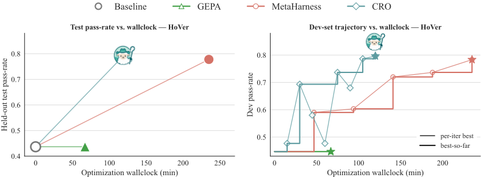
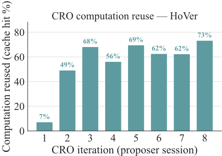
IFBench。MetaHarness 在留出测试集划分上以 1.0 分的优势险胜 CRO（0.523 对 0.512），但 CRO 仅用 82 分钟便达到该前沿，而 MetaHarness 需要 126 分钟。缓存复用从冷启动的第一个会话的 0% 攀升至第 5 个会话的约 50%。
41
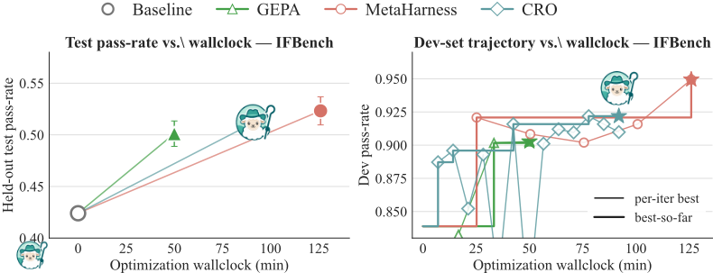
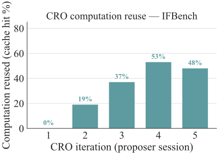
LiveCodeBench。CRO 在留出测试集划分上取得 0.510，比 MetaHarness（0.400）高 11 分，比 GEPA（0.487）高 2.3 分，而 wall-clock 耗时约为 MetaHarness 的一半。在该基准测试（benchmark）上，CRO 和 GEPA 都产生了非平凡的开发集轨迹。
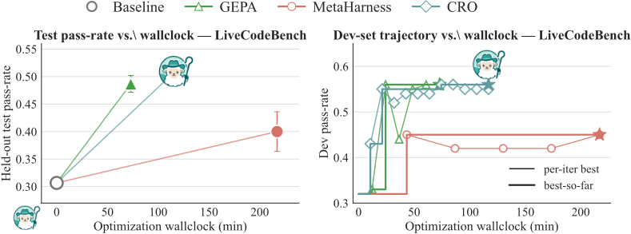
42
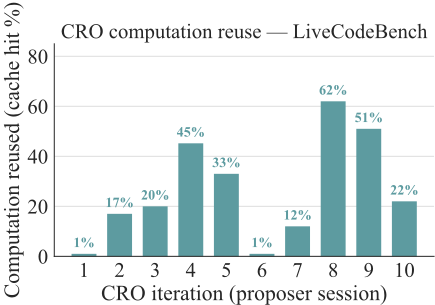
MATH（Level 5）。在 MATH 最难的划分上，CRO 与 MetaHarness 的开发集通过率持平（0.80），而 wall-clock 耗时约 42 分钟，MetaHarness 则约为 100 分钟。我们纳入该数据集是为了完整性；它目前并不在主结果表之中，因为本次运行中 GEPA harness 的开发集历史记录（dev-history）为空。
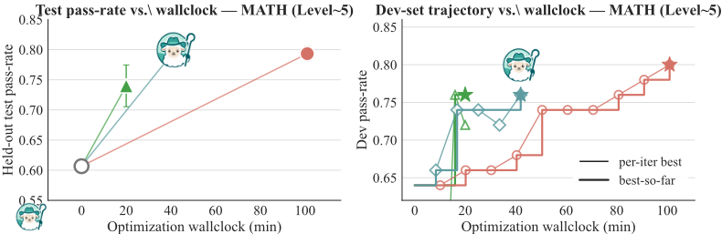
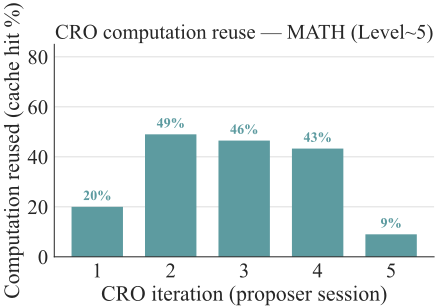
Terminal-Bench 2.0。在该套件中最难的基准测试上，三个优化器均收敛到相同的开发集单次通过率（0.40），但只有 CRO 的候选方案在留出划分上泛化到 0.352 avg@5（相比之下，MetaHarness、GEPA 和基线为 0.312）。MetaHarness 和 GEPA 在本次运行中没有记录逐迭代的开发集评估，因此仅绘制了 CRO 的轨迹。TB2 上的缓存复用
43
在三个 proposer 会话内即饱和至接近 100%，因为每个候选的评估集只有 25 个任务。
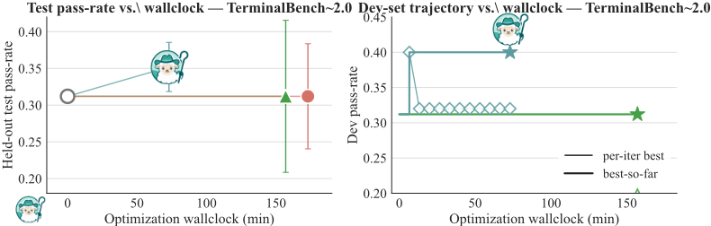
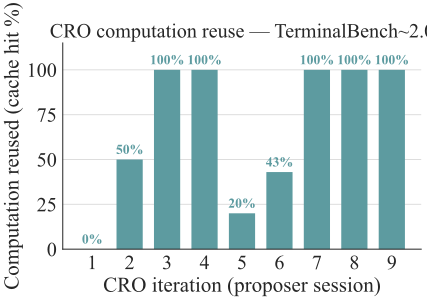
F.5 Case Studies: Interpretable Counterfactual Workflow Edits on HoVer
我们总结了 CRO 在 HoVer 上发现的三次反事实工作流编辑。所用指标为在 300 个样例上的开发集黄金文档覆盖率。基线检索工作流的开发集准确率为 0.447（134/300）。
F.5.1 Case 1: The Workflow Was Accidentally Candidate-Closed
诊断。基线之所以失败，主要并非因为模型无法对多跳声明进行推理。相反，它往往能够识别或暗示出缺失的桥接实体，但随后又将其丢弃，因为后续阶段被约束为只能从上游 TF-IDF 候选列表中进行选择。这导致了系统性的“缺失需求”失败，例如黄金证据中包含 Billy Idol、Collide (film) 或 Saul Metzstein 等页面，而这些页面未被仅限候选的选择器所保留的情况。
LLM 如何得出该诊断。CRO 的 proposer 检查了基线轨迹，观察到摘要中往往包含足够的语义证据，足以指名缺失的桥接页面，而工作流契约仍然要求“仅限精确的候选标题”。因此它推测，瓶颈不仅在于检索广度本身，而在于一个工作流层面的类型错误：恢复出的 Wikipedia 标题被视作不可采纳，除非它们出现在原始候选列表中。
生成的补丁。CRO 增加了一个桥接标题恢复阶段，并放宽了选择器，使其能够保留在工作流过程中恢复出的有据可依的 Wikipedia 标题：
44
bridge_titles = BridgeTitleResolver( claim=claim, retrieved_titles=first_retrieved, evidence_summary=first_summary, ).titles second_retrieved = merge_titles( second_query_titles, bridge_titles, rank_candidate_docs(second_query), ) allowed_titles = candidate_titles + retrieved_titles selected_docs = selector.select(claim, allowed_titles, summaries)
关键变化在于，检索到的非候选标题成为了一等证据候选，而不是在最终选择之前就被丢弃。
提升。该补丁将开发集覆盖率从 0.447 提升至 0.693（134/300 提升至 208/300），带来了 +24.7 个百分点的改进。
F.5.2 Case 2: The Workflow Could Diagnose Its Own Missing Evidence
诊断。在开放世界桥接恢复之后，许多残余失败已不再是第一跳检索失败。工作流在两次摘要之后已积累了足够的上下文，能够描述仍然缺失的内容，但没有任何阶段将这种自我诊断转化为已落地（grounded）的页面标题。示例包括诸如 Huainan、Howea、Bulbophyllum 和 Saul Metzstein 等缺失的证据页面。
LLM 如何得出该诊断。proposer 比较了来自成功候选与失败候选的轨迹，注意到摘要中反复使用诸如 "missing bridge fact"（缺失桥接事实）之类的短语，或直接点名尚未解决的实体。它推断工作流需要一个后期审计步骤：在积累了足够的证据之后，明确询问还缺少哪些文档，然后将这些简短的表层形式（surface form）对照本地维基百科标题数据库进行落地。
生成的补丁。CRO 在第二次摘要与第三跳检索之间插入了一个缺失证据解析器（missing-evidence resolver）：
gap_titles = MissingEvidenceResolver(
claim=claim,
retrieved_titles=merge_titles(first_retrieved, second_retrieved),
evidence_summary=first_summary + "\n\n" + second_summary,
).titles
third_retrieved = merge_titles(
gap_titles,
third_query_titles,
rank_candidate_docs(third_query),
)
该解析器被提示返回简短的表层形式，而非猜测出的带括号标题，随后工作流确定性地将这些表层形式落地到确切的本地维基百科页面。
提升。相对于之前的桥接恢复前沿，该补丁将开发集覆盖率从 0.737 提升至 0.787（221/300 提升至 236/300），带来了 +5.0% 的改进。相对于原始基线，所得工作流高出 +34.0%。
45
F.5.3 Case 3: Recovered Bridge Pages Needed to Become New Evidence Sources
诊断。最令人惊讶的发现是，所有目标样例均通过的候选并非最佳的开发集候选。一个解决了所有目标训练样例的候选在开发集上得分为 0.787，但 CRO 发现了一个更通用的机制：恢复出的桥接页面本身应当被重新读取，作为证据来源。在一个持续性失败案例中，工作流恢复了 Volkswagen CrossBlue，但仍未能恢复二阶比较页面 Honda Pilot。
大语言模型（LLM）如何得出该诊断。提议者检查了轨迹，发现工作流将恢复出的桥接页面视为终点。它还观察到，早期的递归桥接尝试在替换后期缺失证据解析器时均告失败。因此，成功的假设是组合式的：保留后期解析器，但对来自新恢复页面的承载关系的句子添加递归读取。
生成的补丁。CRO 添加了关系线索过滤，并对恢复出的标题进行递归桥接扩展：
relation_cues = [ "competed", "introduced", "based on", "inspired by", "starred", "founded", "won", "record" ]
def relation_sentences(claim, title, snippet):
return [
sent
for sent in split_sentences(snippet)
if has_relation_cue(sent, relation_cues)
or token_overlap(sent, claim + " " + title) >= 4
]
bridge_expansion = collect_recursive_bridges(
claim=claim,
seed_titles=merge_titles(bridge_titles, snippet_bridges),
known_titles=first_retrieved,
max_depth=2,
)
retrieved = merge_titles(
first_retrieved,
bridge_titles,
bridge_expansion,
second_retrieved,
gap_titles,
third_retrieved,
)
这将工作流从“寻找一个桥接页面”转变为“寻找一个桥接页面并检查它以寻找下一个桥接”。
提升。该补丁将开发集覆盖率从 0.787 提升至 0.797（236/300 提升至 239/300），带来了进一步的 +1.0% 改进，相对基线高出 +35.0%。值得注意的是，其目标训练得分低于前一个候选（0.833 对 1.000），但其开发集总分更高。CRO 选择了一个更通用的工作流机制，而非最契合目标训练切片的那次编辑。
F.6 Meta-Agent Guided Tree-RL: full training configuration
训练在 Modal 托管的 8 × H100 节点上进行，采用 SkyRL 的 GRPO 训练方案，并在策略上应用 FSDP2、梯度检查点（gradient checkpointing）与 torch.compile。每个训练步骤使用包含 16 个提示的批次，每个提示采样 8 个样本，即每步共 128 个 rollout。每个 rollout 的上限为 8 轮，每轮最多生成 1024 个 token，最大输入长度为 16,384；将会超出
46
Algorithm 2 Meta-Agent Guided Tree-RL
F.7 Meta-Agent Guided Tree-RL: meta-agent qualitative examples
第 5.3 节中的树搜索 rollout 将分叉选择交给一个更强的模型（claude-opus-4-7）。给定内部 Agent 的完整对话记录与最终奖励，它会返回一个用于分叉的回合 t ∗ ∈ [1 , T - 2]，以及它在该回合会运行的 bash 命令。我们通过策略的渲染器对该命令进行重新渲染，使 token 与策略自身会输出的内容相匹配，并将其作为 t ∗ 处 K 个分支之一注入。
本小节将逐一介绍三种展示 meta-agent 行为的轨迹形态：早期单一成因的失败、具有多个看似合理分支的模糊失败，以及包含深层嵌套错误的长轨迹。这些轨迹足够短，可以端到端通读，且均为手工构造，因此细心的读者对哪一回合是“正确”的分支回合会有很强的先验判断。我们检查 meta-agent 的选择是否与该先验相符、它发出的命令是否真正解决了失败，以及它在不同轨迹长度下是否保持良好行为。（已发布的探针集中另有三个案例因篇幅所限未予展示，它们分别涵盖干净成功时的 no-op、回合后期的范围钳制，以及案例 1 的冗余工具替换变体；其结果与此处展示的模式一致。）
47
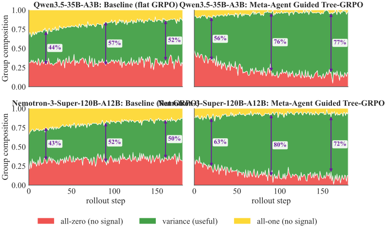
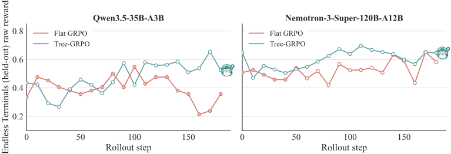
设置。对于每个案例，我们将内部 Agent 的轨迹（系统提示、用户任务，以及交替出现的 assistant 工具调用与工具结果）渲染为带编号的回合列表，并将其连同最终奖励一起发送给 meta-agent。meta-agent 返回一个 JSON 对象 {branch_turn, tool_call, reason}，其中 tool_call.name = "bash"，而 tool_call.arguments.command 即为 bash 载荷。
核心发现。meta-agent 的选择具有两个均匀采样无法复现的共同模式。第一，它倾向于选择最早做出下游错误决策的回合，即使该回合本身并非语法上显而易见的失败（案例 1：包名拼写错误；案例 3：目标文件选择）。第二，
48
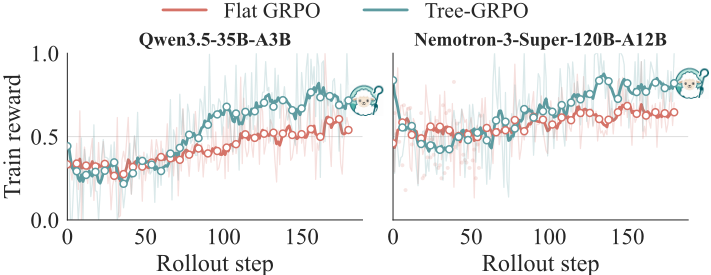
Meta-agent decision (obvious turn: 1)
当轨迹呈现“先症状、后原因”的动态时（案例 2：一个失效进程在第 5 回合浮现，可追溯至第 3 回合的启动问题），它会沿因果链追溯，而不是选取症状出现的回合。要求给出可执行的 bash 命令，而不仅仅是回合索引，迫使 meta-agent 超越含糊其辞的诊断（案例 2：给出具体的 nohup 调用，而非“使用正确的启动标志”），并且该命令经由策略所使用的同一渲染器进行往返处理，因此在解析时，注入分支的 token 与策略自身生成的 token 无法区分。
49
Case 2: Ambiguous failure (T=5, reward=0.30)
任务：在端口 5000 上运行位于 /app/app.py 的 Flask 应用。
branch_turn: 3
元智能体动作：cd /app && nohup python app.py -host=0.0.0.0 > /tmp/flask.log 2>&1 &
原因：'app.py 中没有 __main__ 代码块，因此直接运行它会退出；需要用 nohup 绑定到 0.0.0.0 以保持其存活。'
图 21：歧义案例。至少有三个回合提供了看似合理的分支（跳过版本检查、pip 与 pip3 的选择、后台启动）。元智能体将第 5 回合的症状（ <defunct> ）回溯到第 3 回合的启动操作，并写出了一个具体的替换命令：带日志重定向和显式主机绑定的 nohup。要求提供可运行的命令，促使元智能体不再停留于含糊其辞的诊断，而是给出一个我们可以实际运行的具体假设。
Case 3: Long trajectory, deep mid-mistake (T=9, reward=0.20)
任务：修复 /app/test_utils.py 中失败的测试。
Meta-agent decision (obvious turn: 4)
reason: ‘修复实现而非测试，因为任务是通过修正
branch_turn: 4 ✓（与明显转折一致）meta-agent 动作（多行 heredoc）：cat > /app/utils.py <<'EOF' def normalize(s): return s.strip() EOF 底层代码来修复失败的测试。’
图 22：长轨迹案例。一次 9 轮的 rollout 中，第 4 轮出现了一次对错误文件的编辑，随后级联为 5 轮的恢复性折腾。meta-agent 选中第 4 轮，并写入一段多行 heredoc，干净利落地重写了 utils.py（即 agent 本应编辑的文件）。均匀采样无法优先选择第 4 轮而非那五个恢复轮次；只有 meta-agent 的选择才能把分支预算集中到真正关键之处。
证据核查
2 条证据未在原文中核对到